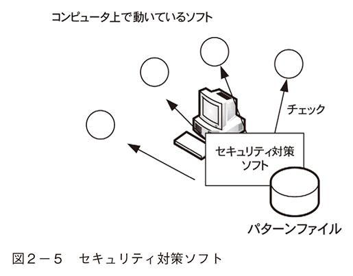
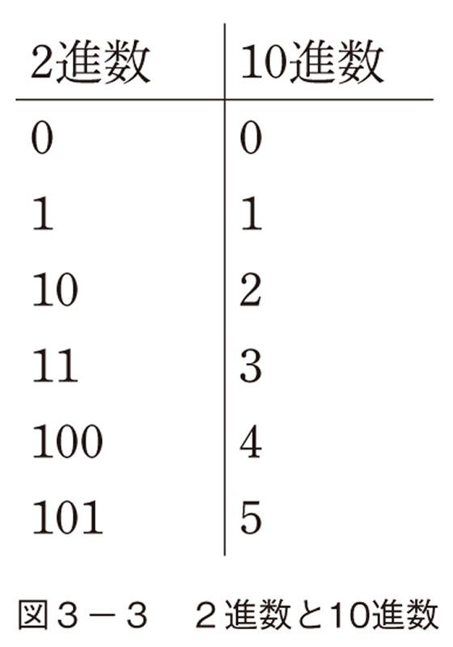

| ハッカーの手口 ソーシャルからサイバー攻撃まで (PHP新書) | |
| 岡嶋 裕史 | |
| PHP研究所 (2012) | |

ハッカーの手口
ソーシャルからサイバー攻撃まで
岡嶋裕史
ハッカーが使うあれやこれやの手口について説明する本です。
たとえば本のオビにそんなことが書いてあったとして、どのくらいの方に興味を持っていただけるものでしょうか。
少なくとも、「おお、ここんとこ毎日『アノニマス』（超有名なハッカー集団）から攻撃されて困ってたんだ。これは買いだな」とおっしゃる方は多くないと思います。というより、そういう方は本を読むより早く警察に行ったほうがいいです。
それは極端にしても、「ハッカー怖いなあ」とか、「個人情報漏洩やばいなあ」と何となくは思いつつも、やはり「自分には関係ないや」と考えている方がほとんどだと思います。
手間暇かけて盗み出すほどの秘密の情報なんて持っていないし、個人情報が漏洩してもせいぜい腹回りのサイズがばれたら恥ずかしいくらいだし、出張で新幹線代請求したけど、ほんとうは高速バスを使って差額を懐に入れたのだって、「まあクビにはならないだろ」くらいですよね（最近はそうでもないので、やらないほうがいいと思います）。実際、普通に生活していて、そんなに後ろ暗い情報を持っているものではありません。
「でも......」、と続けなければならないのが仕事なので、つらいところです。
セキュリティの仕事というのは安心して暮らしている人に、「いやいやいや、こんな危険なことがあるんですよ」と吹いて回る側面があるので、非常に心苦しいです。下手をすると詐欺と間違われます。「危険を煽っておいて何を売りつけたいんだ」という話です。
以下は煽りではなくて単に事実なので、安心してお読みください。最後まで読み進めていただいても、通信販売の広告は出てきません。
現状でやはりハッカーは怖いです。
それは、コンピュータシステムが形成する仮想空間の、現実への侵食が加速度的に高まっているからです。
少し前まで、仮想空間と現実は隔てられていて、オタク（私です）は仮想空間へ引きこもって（私です）出てこなくなるのではないかと思われていました。
でも、仮想空間を構築する技術が高度化して普及してみると、実際の様相はちょっと違っていました。仮想空間と現実は隔てられるのではなく、融合する方向にありました。
自分はコンピュータもそんなに触らないし、ゲームもやらないし、仮想空間なんて見たこともないとおっしゃる方も、けっこうどっぷり仮想空間に浸かっています。
たとえば、交通系ＩＣカードを使って電車やバスに乗れば、どこからどこまで移動したのか仮想空間に履歴が残ります。決済情報も保存され、チップに保存された残額が少なくなればクレジットカードから引き落としが発生します。クレジット会社からは銀行に請求があるでしょうが、その銀行口座には会社からの給料がオンラインで振り込まれています。こうした手順は物理的な手続きをまったく介していません。すべてが仮想空間内で行われています。
これからは、コンビニで買い物をすれば、商品に添付されたＲＦＩＤタグがトレースされ、買い物かごにどんな商品が入っているのか、どの経路を通って陳列棚の間を歩いたのか、どの順番で買いにいったのかが記録されるようになります。おサイフケータイで料金を支払えば、それは自分の属性情報と結びついて、「この人はこんな人」とプロファイリングされていきます。継続的にそのコンビニを使うようであれば、プロファイル情報はどんどん精密になっていくでしょう。
季節や天気によって買い物の嗜好が変わったり、羽振りの善し悪しの予測までやってくれるかもしれません。自分より、コンビニのＰＯＳのほうが自分の将来的な可処分所得を正確に知っているかもしれません。
オンライン店舗の通販サービスは便利です。重いものを手元にまで届けてくれます。昔買った本さえ永遠に覚えていてくれるので、同じ本を購入しようとすると警告まで発してくれます。好きな傾向の書籍が新しく発売されるとお知らせのメールがもらえて、雑誌であれば定期購読、日用品や買い回り品であれば定期購入サービスが受けられます。
スマートフォンを持って散歩をすれば、ＧＰＳ（グローバル・ポジショニング・システム）が忠実に道のりをトレースしてくれますし、チェックインサービスを使っていれば、どのお店に入ったかも記憶します。記念に写真を撮れば、撮影日時や撮影データはもちろん、撮影地点の緯度・経度、海抜まで算出して写真データに埋め込みます。
さらに、ＳＮＳ（ソーシャル・ネットワーキング・サービス）を使えば友だちまで探してくれます。自分の属性データを登録しておけば、趣味嗜好の合う人や、何年も会っていない知り合いを、「お友だちではないですか？」と提案してくれます。一度友だちとして指定すると、その友だちがネットにつぶやいた情報を逐一追いかけることができるようになります。
今どこにいるのか、何をしているのか、起きているのか、寝ているのか、仕事をしているのか、さぼっているのか、いじめているのか、いじめられているのか、顔を合わせているわけではないのに、なんだかやたらとその人のことに詳しくなれます。
写真付きで今日のランチまで紹介してくれる人もいます。そこまでされると、なんだか自分も「写真でも投稿しないといけないかな？」という気分になってきますし、自分が何もしなくても友だちのブログのなかに自分の行動が書かれていたり、写真に写ったりしていることがあります。
ライフログ、自分の人生を保存しようよ、という試みが流行ったことがありました。そんなことができるくらい情報機器の数や種類、記憶容量が大きくなっているわけですが、わざわざソフトウェアを買ったりサービス登録して自分でライフログを作らなくても、社会全体でライフログを作ってくれています。
きょうび、たとえパソコン音痴でも、まだスマホに機種変更していなくても、仮想空間と無縁でいることは困難です。戸籍だって、税金の督促だってオンラインで管理されているのですから、日本で暮らしている以上は見えない仮想空間に首までどっぷり浸かっていると言っていいでしょう。
ハッカーに情報を見られることは、自分の人生を見られることです。
ハッカーに情報を盗まれることは、自分の人生を盗まれることです。
人や人の行動がデジタル情報に変換されて仮想空間に蓄積されている状況下では、これらのうそっぽい警句が真実になります。デジタル情報の海を思いのままに遊弋するハッカーは、まるっとまとめて私たちの情報を盗みます。
それで何が起こるか？
ふつうは何も起こりません。
クレジットカードの番号やパスワードを盗まれて、お金を引き出されたり、自分名義でシステムを使われたりなど、あるにはあるのですが、どちらかと言えば小口の被害です。そんなことをした時点で、ハッキングの被害にあったことが発覚して対策されてしまいますし、ハッカーにとってはあまりうまみがありません。
ほんとうに怖いのは、表面上なにも起こらないことです。
お金も使われません。自分名義でスパムメールも送られません。でも、ハッカーはあらゆる情報を掌握し、必要であればいつでも私たちのパソコンを使える状態を維持しています。会社の情報、官庁の情報、政府の情報が少しずつ、でも確実にハッカーの手に落ちていきます。
そうした状態が続けば、いずれは自分の首根っこだけでなく、国家の首根っこまでハッカーにおさえられてしまうかもしれません。
私たちは、リアルと仮想が融合した、そうした時代を生きています。
この本は、ハッカーが使いそうな手口をいくつかまとめて紹介したものです。順番に読んでいただいたほうがわかりやすいと思いますが、ご興味のあるところをぱらぱら拾い読みしていただくのでもいいと思います。手口を知っていると対処もできるようになっていくので、少しずつ「ハッカーの手口」に詳しくなっていただいて、ハッカーが仕事をしにくい世の中になっていけばいいなあと思います。
たとえ個人的にはいままで何の被害にもあっていなくて、今後もたぶんそうだろうと思っても、ハッカーの跳梁跋扈を許すと、国が相当損をします。
国が損をすると、その国の国民全体もめぐりめぐって損をするので、やはりいくばくかは自分に関係する話です。
ペットボトルのキャップが出てきたら、単に捨てるのではなくてリサイクルに回してみようかなくらいの気持ちで、きんきんに頑張る必要はなく、気がついたときにハッカーが困るような行動をとっていただくだけで、だいぶ世の中が変わると思います。
便宜上、「ハッカー」という言葉を使用していますが、ハッカーの原義は「技術に詳しい人」で犯罪者を含意するものではありません。犯罪を行う人は「クラッカ」と呼ぶべきですが、その辺の詳しい説明は本文中で行います。
ソーシャル。
流行していますね。フェイスブックとか、ツイッターとか。ＳＮＳ、ソーシャル・ネットワーキング・サービスというものです。
リアルに接続した社会的なネットワークをインターネット上で構築する、自然なような不自然なような技術ですが、近年では「ジャスミン革命」とか「アラブの春」とか、革命まで起こしてしまう力を持っています。
フェイスブックを創ったザッカーバーグは、25歳でニュース雑誌「タイム」の「パーソン・オブ・ザ・イヤー（Person of the Year）」に選ばれ、株式の新規公開、ＩＰＯ（イニシャル・パブリック・オーフィリング）時には１兆ドルを調達するとまで言われました（実際にはもう少し地味な数字でしたが）。
ソーシャルの持つあまりの破壊力を、ソーシャル・インフレーションと呼ぶこともあります。無名の人々があげた声が大きなうねりとなって、政権がひっくり返るわけですから、人と人との紐帯の力、そして時間や空間を超えた紐帯を可能にするＩＴ技術の力に権力者たちは恐怖しました。
日本にもソーシャルメディアは普及し、確実に根づいています。
こうした知見を踏まえると、ソーシャルを使って攻撃するというのが実に恐ろしい攻撃手法に思えてきます。
「人々の紐帯を利用して、コンピュータを攻撃する」（？）人海戦術でしょうか。
あるいは、フェイスブックやツイッターが採用している最新技術を用いて、会社のパソコンが狙われるのでしょうか。
どれも違います。
近年の「ソーシャル」が持つ、最先端でパワフルな響きとはまったく対照的に、犯罪業界で使われるソーシャルは実にどんくさいやり方です。
正しくは、ソーシャルエンジニアリング、ないしソーシャルエンジニアリング攻撃と呼ばれます。「社会的方法」くらいに訳しますが、「ＩＴ技術は使わないよ」という意味くらいに受け取ってください。
そうなんです。「セキュリティインシデント」、「ハッキング」などと聞くと、素人には想像もつかないあれやこれやの技術が駆使されて、なんだか映画みたいな、ある種の呪術的な巧緻さでコンピュータに不正侵入されたり、個人情報が漏洩したりする絵がつい浮かぶのですが、現実は必ずしもそうではありません。
実は、一番成功しているのがこの、技術を使わずに人間の盲点や錯覚を突く、ソーシャルエンジニアリングだったりします。この章では、ソーシャルエンジニアリングがどのように行われるのかを見ていきましょう。
アメリカの大学に、「スカベンジャーハント」というイベントがあります。重箱の隅をつつくような問題ばかり集めてきた新入生向けのオリエンテーションの一種ですが、けっこう面白いんです、その大学にすぐに詳しくなれるよう工夫されていて。
......という小ネタとはまったく関係なく、通常「スキャビンジング（スキャベンジング）」といえば、ゴミ箱あさりです。
ゴミ箱は、もちろんその組織や人にとって不要になったものが捨てられる場所ですが、ある組織ではゴミであっても、他の組織にとってはそうではないかもしれません。むしろ、宝の山である可能性があります。
どんなものにもライフサイクルがあって、最初はとても大切にされます。私も新しい電子機器を買ってくると、汚さないように必ず手を洗ってから使ったり、傷がつかないように保護シートを貼って使ったりします。
しかし、長いこと使っているとだんだん目新しさやありがたみもなくなり、扱い方がぞんざいになってきます。次世代製品が登場する直前などは、新妻と古女房くらい扱いに差が出てきます。
情報の扱われ方も同様で、情報にもライフサイクルがある以上、作られた当初は箱入り娘のように、上げ膳据え膳です。情報を守るためのセキュリティ委員会が組織され、全社をあげたセキュリティマネジメントシステムが組まれ、第三者による閲覧や事故による漏洩から過保護なほどに守られます。
ところが、使命を終えると風向きが変わります。守るべき対象から廃棄物へ、席次は奈落へ向けて急降下です。当然、お金をかけてくれる人、気にかけてくれる人、手をかけてくれる人を失い、情報は路頭に迷います。
ハードディスクの、何年もだれもアクセスしたことのない迷宮的奥地に追いやられたり、紙に印刷された情報である場合は、あろうことか裏紙に使われたりします。
その結果、だれかにあげてしまった廃棄ＰＣや、裏紙として活用されたＯＡ用紙からかつての機密情報が大胆にダダ漏れになる事態が持ち上がります。その組織にとっては賞味期限切れでも、他の組織には垂涎の情報かもしれません。
こうした情報を入手したいと思っている人や組織は、常にぞんざいに扱われている宝を探し求めています。そして、それが入手できる確率が非常に高いのがゴミ箱なのです。
ゴミ箱まで含めて、情報の管理がしっかりしている会社もありますが、そうした例はむしろ少数派で、部外秘印が押された書類が無造作に捨てられている組織は決して珍しくありません。簡易シュレッダなどが使われているケースでは、シュレッダにかけたからと余計に扱いが粗雑になっているゴミもあります。簡易シュレッダでの裁断程度であれば、特に高度な技術がなくても、元の形に復元することは難しくありません。少し早めに出かけてゴミ収集車の先回りをするだけで、貴重な情報を得られるわけです。
「ハッキング」というのは、あのハッキングです。「不正侵入」とか、「パスワード奪取」とか、そんなイメージを想起させる言葉です。
ただ、もともとは、そんなに悪い言葉ではありません。ハッカーは「コンピュータに精通するために労力を惜しまない人」、くらいのイメージでした。「世界ハッカー会議」という実にまっとうな会議もあります。
精通した結果、他の人の情報も見られるような裏技を見つけてしまったとか、コンピュータ設計時の弱点を突いて、作った人が予想もつかない悪用方法を思いついてしまったとか、そんなことができるようになり、徐々にイメージが悪化していきました。
最近は、「ライフハック（＝生活のこまごましたことまで工夫して、仕事や人生のクオリティを上げようぜ！）」といった言葉が生まれたり、フェイスブックを率いる異才、ザッカーバーグがハッカー精神を標榜していたりと、「ハック」の復権が進みつつあります。
一方で、技術を悪いことに使っている人たちも厳然として存在するので、そちらは「クラッカ」と呼んで区別することにしました。
ハッカーだと、いい意味で使っているのか、悪い意味で使っているのか文脈から読み取る必要があるので、悪い意味で使うことが確定的な場合はクラッカと言っておけば、妙な誤解が起こりにくくなります。
「ショルダーハッキング」で言及されているハッキングは、悪いほうです。
ショルダーですから直訳は肩ですが、これはもう身も蓋もないくらい名前通りの方法で、たとえばＡＴＭを操作している人の肩口から手元をのぞき込んで、暗証番号を盗み見るような手法を指します。なんとせせこましい、ちまちました方法なのでしょう。
しかし、このちまちました方法が実に堅実な結果を出してきたのです。下手に高度な技術を駆使するよりも、簡単確実に暗証番号を収集することができます。
近年、ＡＴＭに必ずバックミラーが付くようになったのは、ショルダーハッキングへの対策です。もっとも、最近では小型化したサーモセンサーを使ってＡＴＭを操作した指先の残留熱を読み取ることで、どのキーを押したか解析する方法などが試みられているので、わざわざ肩口をのぞき込むような怪しい真似は今後流行らなくなるかもしれません。
ＡＴＭでなくても、スマートフォンの画面などもショルダーハッキングの対象です。スマホは高度な情報表示端末で、個人にまつわる情報を効率的かつ集約して表示してくれます。一方で、液晶技術の進歩により画面の視野角は広がりました。電車内で電子コミックなどを読んでいると、それが隣の人に丸見えで恥ずかしかったりするほどです。
それが、オンラインバンクの決済などである場合は、どのような結果を生むか、火を見るよりも明らかです。
ショルダーハッキングの変形で、「人のメモを見る」、「話を聞く」もあります。けっこういらっしゃいますね、スターバックスでまず席を確保して、悠然とカウンタの列に並ぶ方が。日本は今に至るも安全な水準にある国なので、まあ合理的な判断なのでしょうが、私は小心者であれができないので、いつも席取りにあぶれ、片手にアメリカーノ、片手にＰＳＰで路頭に迷う羽目になります。
でも、席取りに上着や傘を置くくらいはいいとしても、手帳などを載せてしまうのはどうでしょう。けっこう見放題な環境です。メモ魔の人だったら、人生を把握されてしまうくらいの覚悟が必要な行為ではあります。
よくあるパターンが、パスワードが書いてあるメモや付箋を見るものです。
パスワードというのは、非常に利用者に負担を強いる代物です。本人確認の手段は昔からいろいろ考えられてきて、たとえば鍵はそれを持っていることで本人であることを確認します。この方法でも合鍵を作られてしまうリスクは少なからずありますが、それでもそれなりの手間と覚悟を犯罪者に要求します。
しかし、パスワードは「ある知識を知っているかどうか」で本人かどうかを確認する方法です。知識は実体がありませんから、鍵に比べて極めて簡単に伝播していってしまいます。そもそも構造的な欠陥のある本人確認手段であると言えます。
それでもパスワードが使われ続けているのは、それがとても作りやすく、安くあげられるからに他なりません。作り手の都合で使われているわけです。
欠陥のあるものを使っているわけですから、当然どこかにしわ寄せがいきます。パスワードの場合は弱点を運用でカバーする、すなわち利用者に負担をかけることになります。
知識というのは気をつけていないと簡単に漏れてしまいますから、「パスワードはメモに書きとめてはいけない」という運用ルールができます。
一方、簡単に推測されてもいけませんから、「覚えることが困難なほど長大で複雑なパスワード」をひねり出し、それを「定期的に変更しなければならない」ルールも作られます。
ほとんどの人がたくさんのシステムでパスワードを使っていますが、それらは絶対に重なってはいけません。一つ漏れたら、全部のシステムが危険にさらされるからです。
まかり間違ってパスワードに既知の情報、たとえば生年月日など含めてしまおうものなら、鬼の首を取ったように「パスワードが漏れたのは、あなたの稚拙なパスワードのせいで、システム自体にはなんの問題もありませんでした」と言われてしまいます。ほぼイジメです。
当然、利用者のほうはそんなルールを守れるはずもありませんから、どこかにパスワードを書き残す羽目になりますし、「書き残さない」を墨守しようと思えば、簡単で覚えやすいパスワードをすべてのシステムで共通に使うことになるでしょう。
守れないルールは百害あって一利なし、の典型的なお話ですが、中には「情報漏洩しちゃうかもストレス」に耐性のある強者もいて、パスワードが記された付箋が実に堂々と高らかに貼付されたパソコンやディスプレイを使い、あろうことか「今度のパスワードは、キーボードの下一列だ。ｚｘｃｖｂｎｍで覚えやすいぞ、わっはっは」と張りのある声で、同僚と気まぐれな会話を楽しんでいたりします。
私は物心ついたころから変わらず意気地なしなので、気まずくなって目をそらしますが、「クラッカ」は目をそらしてはくれません。圧倒的な速記で、きれいにパスワードを写し取ることでしょう。
人は権威に弱いです。私は学部長にはいつも頭を下げていますし、庶務課のおばさんにもいつも謝っていますし、学生さんにはいつも笑われています。......なんだか、私の場合は権威とは関係ない気がしてきました。
クラッカはどんなふうに権威を使うのでしょう。通常は火急の判断を迫り、思考力を奪うツールとして登場します。たとえば電話がかかってくるわけです。
「はい、おかじまです」
「あー、きみきみ。部長の黄瀬だ。早速だが私のパスワードを教えてくれないか」
「えーっ。パスワードですか。それはまあ管理者ですから、お教えできないこともないんですが、規程違反なのでできません」
「実は今客先にいるのだ。当社の存亡にかかわる重大な案件で、一刻も早く私の個人フォルダにアクセスする必要がある」
「でも規程で......」
「どうしようもないマニュアル人間だな！ 前の管理者はもっと柔軟な対応ができていたぞ！ 君のせいで会社が潰れたら懲戒どころの騒ぎじゃないぞ、むしろ職務怠慢で今すぐに首にしてやる！」
「勘弁してください、私のスキルじゃ再就職先なんてありません。じゃあ、パスワードそのものは私でも見ることができませんので、新しいのを発行します。部長のスマホのアドレスに送ればいいですか？」
「私は急いでいるのだ！ 今！ い・ま・!! 口頭で教えなさい！！！」
というわけで、権威に押され、まっとうな思考を働かせる時間も与えられなかったおかじまさんは、親切にもクラッカにパスワードを教えてあげることになり、翌日、会社を去ったりする羽目になるのです。
一応、このシナリオでは会社側も対抗手段をとっています。規程で「パスワードを知らないおじさんに教えちゃいけません」と決めているのですが、そこは権威で押し切ります。
また、パスワードそのものは管理者でも直接見ることができず、当該社員（この場合は部長）の個人端末にパスワードを送ろうとしています。この手順を守れば、ほんものの部長が個人端末を盗まれていない限り、大丈夫なはずです。でも、そこは権威で押し切ります。
「すぐに決断しろ！ でないと首だぞ！」と言われて、この不況下で冷静沈着を貫ける人は決して多くありません。クラッカにしてみれば、何回か試してみて１回でも教えてくれるうっかりさんがいればいいわけですから、かなり勝率の高いコンゲームだと言えます。
この方法は、別に人対人でなくても使うことができます。うっかり会社からアダルトサイトなどにアクセスすると、
アダルトコンテンツ使用料請求書
あなたのＩＰアドレス 192.168.0.1
あなたのドメイン example.com
閲覧したページ http://adult.tv/uhauha/
請求金額 10万円
上記金額を指定口座に今日中に振り込んでください。振り込みなき場合は、裁判所からの強制執行令状があなたの上司と家族に届きます。
などと、楽しい文言が連ねられたダイアログが表示されます。
落ち着いた状態であれば、ＩＰアドレスやドメインなどインターネット上で通信を行う場合は必ず相手に通知される、宅配便で言えば送り状に書く程度の情報であると知っているにもかかわらず、脅されたり急かされたりすると、何やら自分のことがすべてお見通しになっている錯覚に陥ります。
この相手が上司や家族の連絡先などを知っているか否かは、この情報からは判然としません。むしろ知らない可能性のほうが高いのに、「今日中に振り込むということは15時までに手続きしなきゃだぞ。ああ！ あと１時間しかない!!」ことばかり気になって、業務中に遊んでいた罪悪感も手伝って疑心暗鬼に陥り、すべてを把握されている気分が頭を支配し、挙げ句の果てに裁判所の３文字がちらつきます。そして、振り込んでしまうわけです。10万円で人生終了から救われるなら、まあ払いますね。でも、そもそも人生は終了していなかったわけですが。そう錯覚させるのが、テクニックというものです。
人を錯覚させるには、まず時間責めにすることと、なんらかの方法で思考を鈍らせることです。権威と前例（「前の人はこうした」と言われる）は、人を思考停止に陥らせる便利なツールの代表格です。
振り込め詐欺のお兄さんが「とにかくこの電話を切る前にお金を振り込まないと大変なことになる！」と連呼するのは、相手に冷静に事態を振り返る暇を与えないためです。銀行のＡＴＭで携帯の使用を禁止しているのは、この時間責めから逃れて、正常な判断を回復する時間を作るためです。
スキャビンジングなどと言っても、そんなに簡単にゴミ箱を漁れるものでしょうか。「ウチの会社はオフィスビルの専用区画にゴミ出ししてるし、その区画への立ち入り制限もあるよ」、と反論したくなります。確かに、これはある程度効果のある対策です。でも、気合いの入ったクラッカは悠々と突破する水準の対策でもあります。
実際にあった事例では、クラッカが廃棄物処理事業者の制服を入手してゴミを持ち去ったことがあります。これなどは、「権威」と「スキャビンジング」の組み合わせによる攻撃手法と言えます。
制服というのは一つの権威を象徴し、そこにいることが不自然でなくなります。整然とした区画整理と立ち入り制限の実施されたフロアに、宅配便のお兄さんの格好をしていたらいとも簡単に入ることができた事例は、たくさん転がっています。
セキュリティシステムの基本的な考え方は、大昔からそんなに変わっていません。守るべき大事なものの周囲に壁を造ったり、お堀を掘ったりして外敵の侵入を拒みます。「鬼は外、福は内」というやつです。
宅配便のお兄さんは、普段あまりにも目にする日常であり、制服を着ることで身元がしっかりしているという権威の承認が起こり、仕事を進める上で欠かせない仲間でもあります。自分の視界の中で外敵の範疇に入らず、盲点になる確率が高いのです。結果として、堂々と「ゴミの山を（だれかにとっては宝の山かもしれないものを）」持ち去られてしまいます。
制服まで入手しての犯行となると産業スパイの領分ですが、現時点においてクラッカはまさに産業スパイであると言えます。20世紀、クラッカ（ハッカー）が何か事を起こすときの動機は「自己顕示欲」や「茶目っ気」が最も多いとされました。
誕生日やバレンタインデーにメッセージを表示する「アドウェア」、画面上をゴキブリが這い回る「ウイルス」、いずれも取るに足らないものですが、自分の技術力を誇示したり、だれかを笑わせたり困らせたりしてやろうという酔狂に満ちていました。
時代が下り、ネットワークが社会インフラ化されると、彼らの技術は直接的に「金の卵」を産むものになりました。彼らにスポンサーが現れ、対価として様々な情報の収集や発信を要求するようになったのです。現在、多くのクラッカがこれを収入源としています。クラッカのモチーフは、自己顕示から金銭へと移ったのです。あるいは、金になることをアピールするために、自己顕示の段階があったのだと読むこともできます。
近年のマルウェア（悪質ソフトウェア）に情報漏洩、情報発信（スパムメール）系統のものが多いのは、したがって必然であると言えます。
直接的なソーシャルエンジニアリングではありませんが、ゴミの話題が出たところで廃棄パソコンについて触れておきます。
廃棄パソコンはまさにこれから廃棄されるパソコンですから、ライフサイクルの最終段階、大事にされない家庭の中での私のような扱いの機器です。買った時分はけっこう高く付いたのに、ろくに手入れもされないまま野ざらしに打ち捨てられたりします。
個人情報保護の必要性が喧伝されるようになって相当経つこともあり、さすがに路上のゴミ収集所に「どん！」と置いてあることは少なくなりましたが、内部の補助記憶装置に満載された情報が手つかずで「どん！」のケースはままあります。
セキュリティマネジメントシステムと呼ばれる仕組みを導入している会社（あの悪名高いセキュリティ対策マニュアルなどが整備されている会社）では、マニュアルに書いてある通り、パソコンの中に保存されている情報は「ほかされている」ことでしょう。
しかし、「ほかし」の実効性まで検証している会社はあまりありません。
情報の入ったＣＤやＤＶＤにカッターで傷を入れたりしますが、コーティング層にしか傷が届いていなければ情報を取り出すのは簡単ですし、傷のついていない箇所から断片的な情報を取り出すのはさらに簡単です。
ＣＤやＤＶＤは、盤面に光を当てて、そこから得られる反射で情報を読み取りますので、傷のついていない箇所は健全な状態と一緒です。傷のついている箇所から読み取れないとしても、部分データが全体を語ることはよくあります。
この方法で安心できるまでやるなら偏執的なまでに傷を入れていく必要があるでしょう。ちょっと会社でやるのにおすすめな方法ではありません。情報漏洩からは身を守れても、別のリスクが発生する気がします。
どんな破壊方法が効果的かは、記憶装置の種類によって異なりますが、一様に言えるのはすてる間際の機器は意外と強いということです。ふだん仕事で使っているときは、ちょっとした振動や水没でも「ハードディスクに傷が入っちゃったかな。データ消えてないかな」と気になることがあります。
実際、運が悪ければそれで大事な業務データが「ぱぁ」になることもありますが、完璧を求めず一部分でも取り出せればいいやと割り切れば、相当な割合で生き残っている情報があるのです。
確実に破壊するなら、燃やしてしまうのが効果的です。ＣＤ、ＤＶＤ、ハードディスクはこれでほぼ壊せます。ただ、最近は変なものを燃やすと消防署に怒られますし、有害物質が出るのもいやですね。
物理的に叩きこわすのは、夜中に公道でやってお巡りさんに捕まるなどしなければ、あまり人に迷惑をかけずに実践できる方法です。有効ではあるのですが、先にも述べたとおり１００％を狙うとなると徹底的な破壊が必要になってきます。少なくとも、翌日の筋肉痛くらいは覚悟しなければなりません。壊すのが簡単なＵＳＢメモリくらいにしておきましょう。
水没は携帯などで痛い目を見ることがありますが、お金に糸目をつけずに洗浄、乾燥、修復すれば、そこそこの復旧率を示します。自分で使うときは１００％の修復を目指しますから、「水没したら終わりだ」と思うのですが、クラッカは一部分でも情報が取り出せれば換金できる可能性があることに注意してください。
なお、廃棄したパソコンや記憶装置の情報に暗号化を施してあるからと安心してはいけません。それこそソーシャルエンジニアリングの出番です。クラッカが一度廃棄パソコンを手に入れてしまえば、その出所や付帯情報から元の利用者が割り出され、アンケートや上司からの電話を装ってパスワードが盗み出されるまでは、あっという間です。
第１章の「ハッカーの手口」対抗策
■スキャビンジングへの対策
シュレッダ、消磁装置などを活用する
 シュレッダへの盗撮カメラ設置は、実例アリ。要注意
シュレッダへの盗撮カメラ設置は、実例アリ。要注意
 廃棄物処理事業者との守秘義務契約
廃棄物処理事業者との守秘義務契約
■ショルダーハッキングへの対策
 周囲に人がいないことを確認する
周囲に人がいないことを確認する
 窃視防止フィルタを使う
窃視防止フィルタを使う
他人のパスワードや暗証番号を得るための方法です。「パスワード奪取」などと表現すると、さぞ高度な技術が使われるのだろうと思います。実際、高度な数学理論やアクロバティックなアルゴリズムを用いてパスワードを推測できることもありますが、ある条件下でもっと強大な効果を発揮するのが、力ずくのごり押しでパスワードを割り出してしまう総当たり法です。英語では「Brute Force Attack（ブルートフォースアタック）」といいます。
「粗暴な力任せの攻撃」でパスワードを得る？ どうするのでしょう？
種明かしをすれば何のことはなくて、パスワードである可能性のある語群を全部試してみるのです。
たとえば、解きたいパスワードがあって、それが英小文字３文字でできていることがわかっているとします。このとき、解き方はいろいろ考えることができて、パスワードを作った人の人物像から「こんな文字の並びが好きそうかな」と推測したり、パスワードをメモに残す習慣がある人物であれば、手帳やスマートフォンの内容をどうにかしてチラ見してもいいかもしれません。まあ、けっこう頭を使ったり手間をかけたりする必要があるわけです。
でも、この場合、敵は英小文字３文字ですから、
ａａａ
ａａｂ
ａａｃ
......
ｚｚｚ
と延々やっていけば、難しいことは何も考えなくても、いつかは当たりに到達します。まさに力業で、手当たり次第という感じですが、とても確実な方法です。
もちろん、先に述べたようにブルートフォースアタックが効果を発揮するのは、いくつかの条件が整っているときです。そう、考えられるパスワードの組み合わせが少なめのときです。
何せ、すべてのパスワードを試すわけですから、パスワードの組み合わせが多くなればなるほど、試すのが面倒になります。
パスワードがアラビア数字のみで、３桁だ、とわかっていれば、そのパスワードは０００から９９９まで１０００通りを試してみれば確実に解明できます。一方、同じアラビア数字を使っていても、６桁のパスワードである場合は、００００００から９９９９９９まで可能性があって、最悪の場合、１００万通りのパスワードを試さないと正解に行き当たりません。これは、「解明したら１万円盗めるかも」と思っていても、ちょっと躊躇する数字な気がします。
あり得るパスワードの組み合わせを増やすのは、文字数を増やすのではなく、使う文字種を増やすのでも構いません。パスワードに使う文字が英小文字のみで、２文字だとすると、
ａａ
ａｂ
ａｃ
......
ｚｚ
まで、６７６通りのパスワードを作ることができます。
文字数は同じ２文字のままでも、英大文字を使えるようにすると、
ａａ
ａｂ
ａｃ
......
ＺＺ
まで、52×52＝２７０４通りになって、急にパスワードのバリエーションが増えます。ここに数字や記号も加えて、桁数も数十桁にして......としていくと、考えただけで試すのがうんざりするほどの組み合わせ数にすることができます。
パスワードは使える文字数と文字種があらかじめ定められていることが多いので、いつか解かれることは確定的なのですが、それに投じる時間的コストをパスワード破りで得られる利益と見合わないものにすることで安全を保つ方法です。裏を返せば、簡単にすべて試せてしまうパスワード体系や容易に推測できてしまうパスワードはほとんど意味がありません。
ところが、破ると大きな利益があるのに、破るための努力は最小限でいいパスワード体系が身近に存在します。「暗証番号」です。近年になって絵の並びを使い始めたり、アルファベットを使えるところが登場するなど少し状況が変わりつつありますが、基本的に金融機関の暗証番号（暗証番号と言ったり、ＰＩＮと言ったり、呼び方はいろいろありますが、要するにパスワードです）はアラビア数字だけで構成された４桁の数字列です。
可能性のありそうなパスワードを全部試したところで、００００～９９９９までの１万通りしかありません。この暗証番号を特定すれば、「数十万の利益は確実だ！」と思えば、試し切ってやろうとモチベーションもわいてきます。クラッカにしてみれば、非常に魅力的な攻略対象です。
では、クラッカから身を守らなければならない立場の私たちはどうすればよいのでしょう？ パスワードを複雑にすればよいだろうという発想は、パスワードの構造を知っていればすぐに浮かびますが、暗証番号は数字のみ４桁と、最初から複雑にすることが不可能な制約が存在しています。この一事を取り上げても、暗証番号がいかに欠陥のあるパスワード体系かがわかります。「暗証番号は暗唱番号」というくらいで、ちょっと聞きかじっただけですぐに覚えられて漏洩してしまいますし、危険なことこの上なしです。
そこで次に考えられるのが、パスワードをころころ変えるという対応方法です。仮にアルファベット＋数字＋記号を使った64桁のパスワードが破られるまでの期待時間が１年、数字のみ４桁のパスワードが１日だとします。
複雑で長いパスワードを使うことで、それだけの御利益があるわけですが、逆に言えば脆弱なパスワードでもある程度の時間は稼げるので、その間に新しいパスワードに変更してしまう手が使えます。たとえば毎時間パスワードを変更していれば、クラッカはそのたびにパスワードを試す作業を最初からやり直さなければなりません。
１万通りのパスワードを試す作業をしていて、５０００通りくらいまで終わって「さあ、後半分だ！」と快哉を叫んだところで、「パスワード変更しちゃったもんね」とちゃぶ台をひっくり返されるわけですから、けっこう心が折れる状況ではあります。
コンピュータを使った自動作業であれば別に心は折れませんが、時間がかかるのは確実です。次の作業もある程度進んだところで、またパスワード変更になる可能性があるので、この人のパスワードを解析することはあきらめて、もっと別のうっかりさんを攻略しようとなるかもしれません。パスワードにいろいろ仕掛けをするというのは、突き詰めればこのようにクラッカをあきらめさせることを目的としています。「そこまで時間をかけてられないや」という状態に追い込むわけです。
そもそも何回も試せないようにするのも、有効な対策です。パスワードの入力を何回も間違えると、「パスワードをたくさん間違えたため、お客様のＩＤはロックされました。カスタマーサービスにご連絡ください」などと表示され、画面を蹴り上げてやりたい衝動に駆られることがありますが、これはブルートフォースアタックへの対策です。思いのままにあれもこれもとパスワードを試すことができるのが問題なので、試せないようにしよう、正規の利用者なら間違えたとしてもせいぜい１回か２回だよね、との考え方に基づいています。
この考え方をさらに推し進めたのが、「ワンタイムパスワード」です。パスワードを１回こっきりの使い捨てにすることで、クラッカがパスワードを試すチャンスを限局します。もっとも、この場合は使い捨てのパスワードなるものをどうやって正規の利用者に配るのかが問題になります。
乱数表を用いたり、計算の種となる情報から、利用者にその場でパスワードを作ってもらう方法などが考えられたのですが、どれもそれなりに面倒ですし、リスクもあります。
「乱数表」は事前に配布しておく手間がかかり、かつ乱数表をクラッカに盗まれた時点でアウトです。シードは、世界共通で使えるようなもの、たとえば標準時などをシードとして、それを特殊な計算式に投入してパスワードを得れば、どこでも使えるワンタイムパスワードのしくみが作れます。
しかし、計算が面倒だったり、互いが認識している時間がずれているとパスワードがあわないなどの弊害もあって、世間を席巻するほどには普及していません。
最近多いのは、「トークン」と呼ばれるパスワード発生機を利用者に配布する方法です。これであれば、使い捨てパスワードをいちいちその場で作る手間がかからず、正確なパスワードを作れます。トークンを持って歩くのも面倒だという場合には、スマホや携帯にインストールして使うソフトウェアタイプも用意されています。ソフトを起動すると、パスワードが画面に表示されるわけです。
もちろん、この方法もそれで完全ということはなく、シードと計算式を把握されればパスワードを推測することは可能ですし、何よりも落としたトークンをクラッカに拾われればゲームセットです。トークン（図２－１）を動かしてワンタイムパスワードを得るためにはパスワードが必要で......などとやるのですが、こうなってくるといたちごっこでなんだか意味がわかりません。
クラッカに都合が悪いことは、たいてい利用者にとっても都合が悪いので、クラッカが不正に使うのをあきらめさせるためにしくみをいろいろ複雑にすると、正規の利用者すら使いたくなくなるほど使いにくいものになるのが通例です。
「パスワードには英大文字と英小文字、記号、数字の４種類が必ず混ざっている必要があって、最低32文字以上、１週間に１度は変更しなければならず、１年以内に使用したパスワードと３文字以上同じ部分があったらそれは新しいパスワードとして使うことはできない」、「すべてのパスワードは暗記しなければならず、メモに書き残すなど言語道断。その場合の責はすべて利用者に帰す」、などとドヤ顔で決めているパスワードポリシーあたりはその典型で、そんなルールだれも守りません。ルールを作っている人自身も、守る人などいないことは先刻承知で、単に保身のためのアリバイ工作に過ぎません。
パスワードに限らず、守れないルールが有益な働きをすることはありません。そんなもの作っちゃいけないのです。パスワードはコスト効率に優れた本人確認手段ですが、そろそろ別のしくみを普及させなければならない頃合にきています。
パスワードは総当たり法で必ず特定することができますが、クラッカにとっての問題はそれが現実的な時間内に終わるかどうかです。
近年はパスワードに求められる最低限の長さや複雑さも増す傾向にありますので、クラッカとしてももう少し策を弄する必要があります。そこで出てくるのが辞書攻撃というものです。
これは読んで字のごとしで、
ａａａ
ａａｂ
ａａｃ
......
と機械的に試していくのではなくて、「辞書」に載っている言葉を使って攻めていきます。
人間が作ったパスワードが無機的な英字や数字の並びになっていることはまずありません。利用ガイドがそうしましょうと謳っていても、覚えやすい、意味のある文字列や数字列になっていることがほとんどです。
であれば、意味のある言葉だけ選りすぐって試していったほうが、早く正解にたどり着ける可能性があります。
ここで「辞書」と言っているのは、ジーニアスとかオックスフォードのことではなくて（もちろん、そうした一般的な辞書が辞書攻撃に使われることもあります）、クラッカお手製の「よくパスワードに使われる文字列集」のようなものです。
password
pass
admin
user
root
といった、だれしもが使いそうなもの、メーカーが工場出荷時に仮パスワードとして指定していそうなものから、特定の人や組織を攻撃する場合は、あらかじめその人の生年月日や電話番号、好きな言葉、ペットの名前、親の名前、出生地、出身校、星座、座右の銘などを調べて登録しておくこともあります。
辞書攻撃はうまくハマれば、一瞬でパスワードを解析することがあります。ただ、総当たり法のように、可能性のある方法をすべて試そうという発想ではないので、正解は辞書に載っていないフレーズかもしれません。その場合は、いくら辞書に書かれている文字列をすみからすみまで試していっても、辞書攻撃の枠内では絶対に正解にたどり着けないことになります。
正解が辞書の枠内に存在する場合は非常に効率のよい方法ですが、辞書に載っていない言葉がパスワードになっているときには、逆に際限なく非効率な方法になります。そのため、実際の攻撃では、ブルートフォースアタックと組み合わされるのが一般的です。
辞書攻撃は非常に一般的に使われる攻撃手法なので、パスワードシステムの利用者としては、辞書に掲載されていないような言葉をパスワードとして採用するよう気をつけるのが吉です。それによって、クラッカの攻撃の成功率を低くすることができます。
クラッカもパスワードを知るために、いろいろ苦労しています。それというのもパスワードが秘密にされているからです。秘密なものを秘密でなくするためには、秘密を知っている人に聞いてしまうのが一番の早道です。
技術を使わない方法でパスワードを「知っている人に聞いて」入手する方法は、ソーシャルエンジニアリングとして第１章で議論したので、ここでは技術を介在させた方法を考えてみましょう。
パスワードを得るには、パスワードを使う場所で待ち受けているのが効率のよいやり方です。仮にツンドラという通販サイトがあって、そこのパスワードを入手したいのであれば、ツンドラの社員になって管理者を目指すのが確実です。
私の知人に、ある女子校の内部を見学したくて、でも男子禁制なので娘をもうけて送り込み、ＰＴＡとして潜入する計画を立て実際に10年かけて実行した男がいますが、内部犯というのは一度潜り込んでしまえば絶大な威力を発揮します。
しかし時間的にも工数的にもコストがかかるので、クラッカは知恵を絞るわけです。そこで、出てくるのが、内部に入り込めないのであれば、逆に「自分の庭に被害者を引き込む」発想です。
ディズニーランドだと思って安心して楽しんでいたら、実はデゼニランドだったとか......。ずいぶん古いネタですが、まあそんな感じです。
この手法を使う場合に焦点になるのが、どうやって自分が用意した偽物に利用者を引き込むか、引き込んだ後も本物だと錯覚させてユーザＩＤやパスワードを使わせるかです。
実は後者は比較的簡単に解決することができます。パスワードを使う場所として、たとえばホームページを想定した場合、ホームページはデジタル情報ですからコピーが容易です。
ＰＨＰ研究所のホームページを偽装したいときは、ＰＨＰ研究所のホームページにアクセスすれば、そのままデータをもらってくることが可能です。ホームページはＨＴＭＬという文法に従って「こういうページを表示したい」というふうに書かれていて、通常はその指示どおりにブラウザ（ホームページを見るためのソフト。インターネットエクスプローラやサファリ）がホームページを組み立てて表示します。指示を解釈して従うのではなく、そのままもらってくれば、自分のホームページとして使えます。
ちょっとやってみましょう。仮にブラウザとしてインターネットエクスプローラを使うとして、ＰＨＰ研究所のホームページを見に行きます。いつも通りのページを見ることができるはずです。
このとき、Altキーを押してメニューバーを表示させてみましょう。画面上部にファイル、編集、表示といった選択肢が表示されるので、表示→ソースとクリックしていきます。
こんな感じの画面が表示されることでしょう（図２－２）。これがＨＴＭＬに従って書かれたホームページの生原稿です。ＨＴＭＬは、実際に表示される文字と、その文字をどんなふうに表示すればいいのか、どんな意味を持つのかを表す付帯情報との二つのパートから成り立っています。
イメージしにくければ、芝居の台本を思い浮かべてみてください。
台本は、実際に観客に聞かせるセリフと、そのセリフをどう演じればいいのかを記したト書き部分から成っています。このとき、観客が直接耳にするのはセリフ部分のみで、ト書きのところは役者のみがわかっていればいい情報です。それはお客さんに見せる必要がないというか、舞台裏に隠されている部分なわけです。
ホームページの記し方も一緒です。
ホームページを訪問してきた人に読んでもらうべき文章と、その文章が全体の中でどんな意味を持つのか、どのように表示すればいいのかは明確に分かれていて、後者はあくまで舞台裏で必要なだけ、訪問者には見せる必要のない情報として処理されます（図２－３）。
技術者はホームページを作成するとき、前者を地の文として、後者を の中の文として書き進めていきます。たとえばこんなふうです。
の中の文として書き進めていきます。たとえばこんなふうです。
titlePHP/title
こうしておくと、ホームページ上に書くべき文章は「ＰＨＰ研究所」なんだな、そしてそれを囲んでいるの内容から、「ＰＨＰ研究所」はページのタイトルなのだなと理解できるわけです。
この情報を読み込んだブラウザは、タイトルは画面の上部に表示しようと気を利かせて、このように画面を構成します（図２－４）。
titleとは、画面のどこを探しても書かれていません。それに沿って画面を作りましたが、それ自体はブラウザへの指示であって、お客さんに見せる情報ではないからです。
しかし、このようにブラウザに解釈させずに、先ほどのようなやり方で表示したり保存したりすれば、私たちは「ＰＨＰ研究所のホームページ」という台本自体を手に入れることができます。
舞台を見に行っても、台本を入手することは難しいことを考えれば、インターネットの世界とはずいぶんオープンです。これは、ほんとうにＰＨＰ研究所が持っている情報と寸分違わぬ複製情報ですから、ＰＨＰ研究所のホームページをそっくりそのまま移し替えることが（少なくとも見た目に関して言えば）、極めて容易であることが理解できます。
このほんものそのもののホームページを使って、クラッカが自分のホームページをＰＨＰ研究所や信用のある機関のホームページであると錯覚させることができれば、お客さんのユーザＩＤでもパスワードでも口座番号でも電話番号でも、なんでも取り放題です。何せそれを知っている本人がクラッカの用意したホームページに入力して送信してくれるのですから、こんなに楽で確実な方法もありません。
もっとも、単純にこのやり方を使うだけだと、だれかがクラッカのホームページを訪問するのを待つことになるので、効率が悪いというか、ほとんどだれも訪れないことが予想されます。
たとえば、クラッカが自分のホームページのアドレスとして、http://www.pnp.co.jp/を用意して、ＰＨＰ研究所のホームページを見に行く人が本来http://www.php.co.jp/と打つべきところを、ｎとｈを打ち間違えるのをひたすら待つようなやり方です。
さすがにこれを気長に待ち続けたら、どんなに若い眠り姫だっておばあさんになってしまいそうです。そこで、クラッカはもっと積極的にお客さんを自分のコンピュータに誘導してくるわけですが、そこは次章「誘導攻撃」で詳しくご説明します。
でも、この手法の意外と怖いところは、自分に瑕疵がなくても攻撃が成立してしまうケースがあることです。ｐｈｐをｐｎｐと打ち間違えないようにするのは気をつけることができますが、コンピュータが間違えてしまうことがあるのです。
コンピュータがすべてのものごとを０と１の２進数に還元して処理、記憶していることはよく知られています。先ほどの例でいうと、ｈはコンピュータ内部では０１１０１０００として、ｎは０１１０１１１０として扱われています。
２カ所に違いがありますが、コンピュータ内部での処理中、あるいは通信中にノイズなどの混入により０と１がひっくり返ってしまう「ビット誤り」という現象が起こることがあります。
都合よく６桁目と７桁目がひっくり返ったとすると、http://www.php.co.jp/と正確なアドレスを入力しているはずなのに、http://www.pnp.co.jp/を閲覧しにいってしまいます。
現実にはそうそう都合よくクラッカの狙ったようにビット誤りが起こるものではありませんし、ビット誤りを補正する技術もたくさんあって製品に組み込まれています。しかし、完全に０になるものではありません。また、ビット誤りはコンピュータにとって厳しい環境、すなわち熱暑であるとか強い電気的ノイズのある場所などで起こりやすいですが、モバイル機器の増加でこうした環境でコンピュータが使われることが多くなっています。
スマートフォンなどはパソコンのように冷却ファンを搭載するわけにはいきませんし、機種によっては相当熱くなります。供給される電圧もパソコンに比べれば不安定です。潜在的なリスクは高まっていると言えます。
ビット誤りを期待することについては、そもそもが偶然を狙った攻撃手法なので必要以上に恐れることはありませんが、そんな攻撃のやり方もあると頭の片隅に入れておくといいと思います。今の製品は工作精度が高いので過酷な環境でも結構動いてくれますが、なるべくストレスがかからない状態で使ってあげると吉です。
もっともっと直接的に、クラッカがあなたのパスワードを盗んでいくこともあります。「キーボードロギング」、あるいは単に「ロギング」と呼ばれる方法です。
名前の通り、押されたキーをすべて記録しておくソフトを作るやり方で、発想としては極めて単純です。しかし、絶大な効果が得られます。
何せ、押されたキーをすべて覚えているわけですから、銀行の口座番号、暗証番号、クレジットカードの番号、ネット決済用のパスワード、セキュリティキー、取引先の住所、家族構成から日記の内容、愛人の名前まで、とにかく押したものはすべてダダ漏れになります。
文章作成のツールが、紙と鉛筆から完全にパソコンへと移行している現代において、非常に強力な、身も蓋もないほどの情報漏洩ツールと言えるでしょう。
この種のソフトウェアを作成することはとても簡単です。
プログラミングの経験のない中学生でも、１か月も本気で取り組めば作れるようになると思います。パソコン内で常に動いていて、押されたキーを記録し続けるだけですから、ソフトウェアの構造としてはシンプルです。もっとも、足がつかないようにする工夫は相当難しいので、そこが抑止力になります。
したがって、いつもびくびくしている必要はありませんが、けっこう簡単に作ることができて、かつだれが作ったのかばれても、捕まったりしても気にしない人であればいつでも使う可能性があることは知っておきましょう。
では、私たちはどのようにロギングに対応すればいいのでしょうか。
コンピュータがあぶないのだから、そもそもコンピュータを使わないとか、ネットワークに接続しないという方法も考えられ、確かに大きな威力を発揮しそうですが、これだけコンピュータやネットワークが浸透した現代社会において、コンピュータを使わないことは情報漏洩と同等以上のリスクを生みそうです。クラッカも私たちが今さらコンピュータなしの生活に戻れないことを承知した上で、攻撃してきているわけです。
一つにはセキュリティ製品を使うことです。もっとも身近なところでは、パソコンにインストールして使うセキュリティ対策ソフトでしょうか。
ウイルス対策を主眼として登場したこの種の製品は、多機能化が進んで、現在ではコンピュータウイルスを見つけるだけでなく、漏洩していこうとする情報をチェックしてストップをかけることまでします。
セキュリティ対策ソフトは、コンピュータ上で動作しているソフトを監視して、悪さをすることがすでに知られているもの、怪しい動作をするものを見つけて停止させます（図２－５）。ほんとうは悪さをするのに、セキュリティ対策ソフトをたぶらかして、悪さをしないように見せかけるのは大変なので、これを自分のパソコンに導入しているだけでも相当ロギングを防止することが可能です。

セキュリティ対策ソフトが悪いソフト（以前は何でもかんでもウイルスと言っていましたが、近年の悪質ソフトの広がりの中で、たとえばスパイウェアやアドウェアといった、ウイルスとは呼びにくいタイプが登場してきました。そこで、全部をひっくるめてマルウェアと呼ぶことがあります）を見つけるやり方は、パターンマッチングと呼ばれる方法です。
これは、疑わしいソフトを見つけたときに、現在までに知られている悪いソフトの特徴と見比べてチェックするものです。悪いソフトの特徴を記したデータベースのことをパターンファイル、シグネチャなどと呼び、セキュリティ対策ソフト本体とセットでパソコンにインストールします。
言うなれば手配書方式で、イメージがつかみにくかったら、交番の「この顔見たら１１０番」を想像してください。あれは、「犯罪者の顔はこう」という既知の情報があって、それを広く周知することで、本人がいたときにすぐに照らし合わせて通報できるようにしたものです。犯人の逮捕にものすごく効果があります。
ただ、手配書方式には大きな弱点があります。
顔写真を掲示する必要があるため、すでに面の割れている犯罪者しか手配できないことです。初犯で、まだまだ警察に顔を知られていないルーキー犯罪者を、「この顔見たら......」とやるのは不可能です。
セキュリティ対策ソフトも同じ構造的な弱点を持っています。パターンファイルにはウイルスの特徴が示されていますが、ここに登録されているウイルスは、登場してからそれなりの時間が経過し、検体をセキュリティ対策ソフトのメーカーが入手し、特徴点を抽出したものばかりです。
つまり、新たに作られたウイルスが、世界で初めての攻撃先として自分のうちを狙ってきた！（ゼロデイ攻撃といいます）などというケースには対処できません。
また、メーカーは新しいウイルスが登場したり、姿を変えるたびにウイルスを捕まえて特徴をあぶり出し、パターンファイルに追加しますが、せっかくのメーカーの努力を無にするように、パターンファイルをまったくダウンロードしない人がいます。私も忘れます。
古くなってしまったパターンファイルは、倒産してしまった会社の株券のように役に立ちません。古いウイルスは発見することができますが、１年に２００万～３００万の新種ウイルスが開発されるといわれる昨今、昔の「この顔見たら１１０番」情報を元にウイルス探しをするのはいかにも頼りないです。
そのため、現在ではほとんどのセキュリティ対策ソフトがパターンファイルの自動更新機能を持つに至っています。ただ、パターンファイルは有償契約を交わしている契約者のみに配られるのが通例ですから、一般的な売り切りのソフトと同じように考えてセキュリティ対策ソフトの契約更新をしなかったり、そもそもメーカーすら発見していない新種のウイルスが紛れ込んだ場合は処置なしです。
したがって、セキュリティ対策ソフトを使っていたからといって、ロギングを行うウイルスに対して１００％安全とはお世辞にもいえません。
では、この段階でウイルスが見つけられなかったら、もうおしまいなのでしょうか。
それでは不安なので、コンピュータシステムには多層防御が施されます。多層防御というとたいそう立派な響きを持っていますが、セキュリティのしくみでは昔からあるものです。
マンションの玄関が二重扉になっているように、艦隊防衛システムが飛来する対艦ミサイルに対して、まずは長距離対空ミサイルで、撃ち漏らしたものに中距離～近距離対空ミサイルで邀撃し、最終的にはＣＩＷＳ（バルカン砲）で対応するように、だいじなものを十重二十重に守るのは自然な発想です。
セキュリティ対策ソフトの場合は、ロギングを行うソフトが活性化してキーボードの押下記録（ログ）を蓄積してしまっても、次の段階としてそれがクラッカの手元に送信されないように妨害します（図２－６）。
仮にセキュリティ対策ソフトが妨害に失敗したり、本来怪しいはずの通信をクラッカの偽装によって普通の通信として見過ごしてしまっても、次は各家庭や、会社であれば各フロア、建屋との境界線、通信事業社内に設置された各種の通信機器がそれぞれの段階で怪しい通信を見つけます。
もちろん、すべてをスルーする、よく偽装された通信はあり得ますし、そもそも多層防御などまったく考えていないネットワークもありますが、きちんとした設計がなされたネットワークであればそれなりの抑止力があります。そのため、クラッカが恒常的に狙うシステムとして、公共の場所のコンピュータが登場するのです。
公共の場所に設置されたコンピュータは、その性質上不特定多数の人が使うため、クラッカが触れるのが極めて容易です。わざわざ偽装通信などしなくても、自分で直にコンピュータを操作し、ロギングを行うウイルスを仕掛け、しばらく放置してログがたまった頃に再び足を運んでログを回収することができます。
こうしたクラッカの行動を踏まえて、利用者が使うごとにコンピュータを初期化するような処置が考えられますが、すべての公共パソコンがそのような対策を施しているわけではありません。共用のパソコンでは、重要な情報を取り扱わないよう気をつけましょう。
また、ロギングへの簡単な対応として、ソフトウェアキーボードを使うのもよいでしょう。
ソフトウェアキーボードとは、ディスプレイ上にキーボードを表示して、マウスでそれをかちかちやって、キーボードの押下のかわりにするものです（図２－７）。Ｗｉｎｄｏｗｓマシンでは、スタートボタン→すべてのプログラム→アクセサリ→コンピュータの簡単操作→スクリーンキーボードとクリックしていくと、動かすことができます。
もともとは何かの事情でキーボードが使えないときに頼るものなのですが、これを使って入力すると、実際のキーボードとは違った経路で「今このキーを押したよ」という情報がコンピュータに伝わるので、ロギング除けの対策になります。
もちろん、ソフトウェアキーボードの使用まで想定してウイルスを作ってくるクラッカもいますが、どのキーを押したか検知される確率を減らすことができるのは確かです。オンラインバンクなどでは、実際のキーボードを使わず、ソフトウェアキーボードで暗証番号を入力するよう求められることがあります。
第２章の「ハッカーの手口」対抗策
■総当たり法への対策
長くて複雑で推測しにくいパスワードをころころ変えつつ使う
何回もパスワード入力を間違えたら、そのＩＤをロックして、使えないようにする
■辞書攻撃への対策
意味のある語、自分にまつわる情報をパスワードにしない
■フィッシングへの対策
メールのリンクは信用しない
ブラウザやセキュリティ対策ソフトのフィッシング判別機能を使う
■ロギングへの対策
 共用のパソコンで重要な情報を取り扱わない
共用のパソコンで重要な情報を取り扱わない
 ソフトウェアキーボードを使う
ソフトウェアキーボードを使う
前の章で、通信を誘導される怖さに触れましたが、問題は誘導する方法です。ホームページにアクセスする方法は、アドレスを入力する、検索サイトを使うなど幾通りもありますが、どれも介入する余地が少ないです。
似たアドレスを用意しておいて、利用者の打ち間違いを待つ方法を紹介しましたが、
http://www.php.co.jp/
を
http://www.pnp.co.jp/
に打ち間違えてくれる極小の確率に賭けて、ずっとホームページを用意して待ち続けることは、決して効率のよいやり方ではありません。
検索サイトに介入して検索結果をねじまげ、ＰＨＰ研究所のリンクをクリックするとクラッカの用意したにせページに飛ぶような方法もできると言えばできますが、技術的にはけっこう高度になります。
必要な技術水準と効果のバランスに優れていて、クラッカがよく採用する方法が、にせメールによる誘導です。メールは認証機能が弱いコミュニケーション手段で、送信元を偽装する方法に事欠きません。そこで、ＰＨＰ研究所を差出人として装ったメールを作ります。これは簡単に作ることができます。
ＰＨＰ研究所のメールマガジンに登録するなどして、ＰＨＰ研究所の公式なメールを入手しておき、それを元に偽装メールを作ります。偽装メールにはほんもののメール同様に、クリックするとさらに詳細な情報を表示するホームページへのリンクが張ってあるのですが、そのリンク先はクラッカが用意した偽装ページになっているわけです。
こうしてクラッカは善良な利用者を「釣る」わけです。
フィッシングに引っかからないようにするためには、メールで送られてきたＵＲＬではなく、検索サイトなどから見たいホームページへ至るといった工夫が有効です。また、何らかの理由でメールのリンクを利用しなければならない場合でも、ＵＲＬをきちんとチェックする癖をつけましょう。右で示した、http://www.php.co.jp/（正規のサイト）を、http://www.pnp.co.jp/（クラッカのサイト）のように紛らわしいものにするやり方は、これで相当程度防ぐことができます。
近年被害が増えているのは、短縮ＵＲＬを介したものです。短縮ＵＲＬはその名の通り、長くて打つ気にならないＵＲＬを短くしてくれるサービスです。グーグルのGoogle Url Shortenerや、TinyURL.comのTinyURLといったサービスが有名です。
たとえば、ＰＨＰ研究所の書籍『相対性理論から１００年でわかったこと』の紹介ページのＵＲＬ
http://www.php.co.jp/books/detail.php?isbn=978-4-569-77482-4
が長いなあと思ったとき、Google Url Shortenerにこのアドレスを入力すると、http://goo.gl/FZWMI という短いＵＲＬを発行してくれます（図３－１）。私たちはこれを使って、同じページにアクセスすることができます。
短縮ＵＲＬは、直接入力を行う場合、打ち込む手間が省けるのはもちろん、ツイッターなどのサービスで大変便利です。ツイッターは投稿時の文字数制限が厳しいため、長いＵＲＬを掲載しようとするとそれだけで文字数がいっぱいになってしまうことがあります。そのため、短縮ＵＲＬは爆発的に普及しました。
しかし、短縮ＵＲＬは元のＵＲＬとは似ても似つかない文字列になってしまうため、「変なところに誘導されていないか目でチェックする」ことの大敵です。実際、短縮ＵＲＬを使った誘導事件は多数起きています。
本来であれば、短縮ＵＲＬを使わないほうが安全ですが、実務上そうもいかないこともあるでしょう。その場合は、短縮ＵＲＬを元の形に直してくれるサービスもあるので（図３－２）、元のＵＲＬを確認するとよいでしょう。一手間かけることで、格段に安全性を高めることができます。
次に考えてみたいのが、ＤＮＳを偽装する方法です。
新聞などでよく報道されますが、インターネット上の機器にはＩＰアドレスという識別番号が割り当てられます。通信においてアドレスは必須の要素です。おのおのの機器を特定できなければ通信を開始することができませんから、電話における電話番号、郵便における住所のように、インターネットではＩＰアドレスが、送信先、送信元を表す符号として使われるわけです。
しかし、このＩＰアドレスが一筋縄ではいきません。何せコンピュータ向けの符号ですから、コンピュータに都合のよいように設計されています。具体的に言うと、32桁の２進数で成っているのです。
ｎ進数、つまり何個の数字を使って数を数えるのかは、数える主体の物理的特徴や文化的背景に左右されます。人間の場合は、数を数えるツールとして指があり、それが10本であることがとても強い拘束条件になっています。それで、10をひとまとまりとして考え、10になると桁が上がる処理をします。
コンピュータはどうでしょうか。
コンピュータは指折り数を数えることはしません。その代わりにシリコンの集積回路を使います。回路に電流が流れているか、流れていないかが彼らの判断基準です。したがって、コンピュータにとってまとまりのよい数は２、使う数字が０と１の、２進数が用いられます。10進数を使う私たちが２と数えるところで桁上がりをするわけです（図３－３）。

ＩＰアドレスは32桁の２進数が使われるので、書き表すとこんなふうです。
11000000 10101000 00000000 00000001
コンピュータはインターネット上で通信するとき、送信先、あるいは送信元としてこのような数値を指定しています。しかし、これは人間にとっては異様にわかりにくいですし、「宛先を入力してください」などと言われたときに、まず間違いなく間違えると思います。
そこで人間がＩＰアドレスを入力したり、読み取ったりするときには基数変換が行われます。２進数を10進数に直すわけです。具体的には32桁の２進数を８桁ごとに四つのブロックに分け、そのブロックを10進数に直していきます。たとえば前ページに示した数値ですと、
192.168.0.1
となります。
一つのブロックの取り得る値は、２進数で表すと００００００００～１１１１１１１１で、これを10進数に直すと０～２５５ですから、ＩＰアドレスは0.0.0.0～255.255.255.255の間の数値で表されることになります。
11000000 10101000 00000000 00000001に比べればだいぶましですが、それでも覚えにくいことこの上なしです。「うちの会社のホームページは、172.16.0.1です。こんど見に来てください」と教えてもらっても、私だったら絶対に間違える自信があります。
そう思った人はけっこう多かったらしく、インターネットでは便利な別名が使われることになりました。ホームページやメールアドレスでよく使われるwww.php.co.jpという例の形式がそれで、ドメイン名といいます。
電話番号は覚えにくいから、電話をかける友だちの名前を登録しておこうという感覚でしょうか。
電話には電話帳があり、名前で引けば電話番号が出てくるように、インターネット上にも電話帳と同等のサービスをしてくれるコンピュータがたくさん設置されています。これをＤＮＳサーバといって、「www.php.co.jpと通信したいんです。でも、これは正式なアドレスではなくて通信できないから、www.php.co.jpと対応するＩＰアドレスを教えてください」とお願いすると、瞬時に教えてくれる気のいいコンピュータです。
私たちがドメイン名を使うときは、ほとんどＤＮＳサーバに問い合わせをしてＩＰアドレスに直してもらい（これを名前解決といいます）、ここで得られたＩＰアドレスを使って通信をスタートさせています。「ほとんど」というのは、自分のパソコンの中に電話帳状のものが置かれていて、それを見ているケースもあるからです。
ブラウザを使ってホームページを見るときなどは、ブラウザが自動でＤＮＳサーバに問い合わせをしてくれますから、ふだん「ああ、ＤＮＳのお世話になっているなあ」という実感はありません。せっかくですから、ここでは自分でＤＮＳサーバに問い合わせをしてみましょう。Ｗｉｎｄｏｗｓマシンであれば、nslookupというコマンドを使います。
スタートボタン→すべてのプログラム→アクセサリ→コマンドプロンプトとクリックしていくと、黒背景に白字の素っ気ない画面が現れますので、ここで「nslookup」とタイプします。
世の中にはたくさんのＤＮＳサーバがありますが、「困ったときは最初にここに聞きに行くぞ」と決めているサーバに問い合わせが送られます。会社であれば社内のＤＮＳサーバであるかもしれませんし、個人宅であれば契約している通信事業者のＤＮＳサーバになっていることが多いでしょう。最近は、自動的に「最初に聞きに行くＤＮＳサーバはこれ」と設定してくれることが多いので、管理のしっかりした会社に勤めていたり、親切な通信事業者と契約していれば、自分で設定したことなんかないという方も多いと思います。
このケースでは、
ＩＰアドレス163.139.230.164
ドメイン名ns1.vectant.ne.jp
というＤＮＳサーバに問い合わせをしています（図３－４）。ＩＰアドレスもドメイン名も同じ１台のコンピュータを指し示しています。インターネット上で通信に使われるＩＰアドレスで表記すると163.139.230.164で、人間向けの別名で表記するとns1.vectant.ne.jpとなるわけです。
現在、ＤＮＳサーバと通信がつながって、問い合わせに答えてもらえる状態になっていますから、ＰＨＰ研究所のコンピュータのことを聞いてみましょう。ＰＨＰ研究所のホームページを見せてくれる用のコンピュータのドメイン名は、www.php.co.jpです。
何回か繰り返しているように、www.php.co.jpは人間向けの名前であって、インターネット上で通信に使える正式なアドレスではありませんから、www.php.co.jpをもとに正式なアドレスを教えてもらうことにします。ＤＮＳサーバにwww.php.co.jpと送ってみましょう。
すると、www.php.co.jpを正式なアドレス（ＩＰアドレス）で言い直すと202.212.29.208だよ、と教えてくれました（図３－５）。これでＰＨＰ研究所のＩＰアドレスがわかりました。これをブラウザのアドレス欄に入れてみましょう。普段ならhttp://www.php.co.jp/とするところですが、今回については別名を使わなくても正式なアドレスがわかっています。http://202.212.29.208/としてみます。
ちゃんとＰＨＰ研究所のホームページを見ることができました（図３－６）。ＩＰアドレスを使ってＰＨＰ研究所のコンピュータと通信できたわけです。
ところで、いくらＤＮＳサーバといっても、すべてのコンピュータのドメイン名とＩＰアドレスの対応関係を知っているわけではありません。当然、問い合わせはしたものの、ＤＮＳサーバがＩＰアドレスを知らないコンピュータもあるわけです。
そんなとき、ＤＮＳサーバは「知らないよ」とは言わず（言うＤＮＳサーバもあります）、当該アドレスを知っていそうな他のＤＮＳサーバに聞いて回ってくれます。めでたくそのアドレスを知っているＤＮＳサーバから回答があれば、教えてくれます。実に親切で人がいい設計になっているのです。
クラッカはこの人のよさにつけこむことを考えます。セキュリティ上、致命的な欠点はこの伝言ゲームのプロセスの中で見つかります（図３－７）。
最初に「僕はwww.php.co.jpを知らないんだ、だれか知ってる人教えて」と救難要請したＤＮＳサーバは、一番先に返ってきた回答を信用します。悪いコンピュータがうその情報を教えてくるなど夢にも思っていないのです。
ですから、www.php.co.jpを知っていなさそうなＤＮＳサーバに問い合わせをし、それが転送されるのを見届けた瞬間に、「実はwww.php.co.jpをＩＰアドレスで言い直すと、x.x.x.xだよ」とうそのアドレスを教えれば、かわいそうなＤＮＳサーバはそれを自分のアドレス帳に記載します。この手順はＩＤの確認こそあるものの、そのＩＤが推測しやすいので、基本的には早い者勝ちです。したがって、後から正規のＤＮＳサーバが正しい回答を返してきてもそれは捨ててしまいます。
以降、このＤＮＳサーバは「www.php.co.jpはどこですか？」という問い合わせに、「x.x.x.xです」とうそのＩＰアドレスを教え続けるでしょう。このＤＮＳサーバが悪いわけではありませんが（だまされているだけです）、結果的にうそのＩＰアドレスを教えられた私たちは、ＰＨＰ研究所のコンピュータと通信しているつもりで、x.x.x.xという、おそらくはクラッカが罠を張り巡らして待ち構えているであろうコンピュータと通信してしまうのです。これを「ファーミング」といいます。
もっとインターネットの根幹に関わるところで、通信を誘導したり止めたりすることもできます。インターネットは、インター＋ネットから作られた言葉ですから、「ネットワーク間の～」と訳すことができます。
もともと各種各様のローカルネットワークが存在していたところに、それをつなぐ技術として登場したのがインターネットです。
ですから、インターネットのどこかにネットワークを統括するヘッドクォータがあるわけでも、管理者がいるわけでもありません。どちらかといえば、寄り合い所帯というか、互助会のような雰囲気で運営されています（図３－８）。
ところで、ネットワークとネットワークをつなぐ機器のことをルータといいます。複数台のパソコンやスマートフォンをインターネットに接続するときには家庭でも一般的に利用しますから、目にしたことがある方も多いと思います（図３－９）。
先の説明を踏まえれば、ルータはインターネットを構成する最重要機器ということになります。それまでバラバラにしか存在し得なかった個々のネットワークを接続し、１個の巨大なネットワーク（マスコミ等がいう、いわゆる「インターネット」）として振る舞うように組み上げるのはルータだからです。
あるネットワークから別のネットワークへ通信が届けられるとき、ルータがつぎつぎにその通信を中継していきます。
インターネットはこの中継の仕方が絶妙で、そのつど最適な経路を探してくれるので（図３－10）、どこかのケーブルが寸断されていたり、メンテナンス中だったりしても、利用可能な経路を探して通信を届けてくれます。災害に強いネットワークといわれる所以です。
ルータがとても重要な機器だということは、インターネット上の距離の単位を見ても明らかです。インターネットでは距離はホップ数という単位で測ります。これは「ルータを何個経由するか」のことで、目的地までに１個のルータを経由するなら１ホップ、２個なら２ホップとなります。物理的な距離は関係ありません。遠隔地でも数ホップで到達することもありますし、構内でもネットワークの組み方によっては２桁のルータを経由することもあります。
このようにネットワークの要としての機能を持つルータですが、それゆえにここを攻撃されるとネットワークは簡単に機能不全に陥ります。
先ほどインターネットには全体を掌握する管理者はいないと説明しましたが、そうなるとインターネットの全体図のようなものもないことになります。ルータが通信を中継する際に、地図に類するものが必要になると思うのですが（そうでないと、目的地までの距離が測れず、なるべく近いほうの経路に中継してあげる仕事がこなせない）、ルータはどうやってそれを作成しているのでしょうか。
実はルータは、周辺にいるルータと情報を交換しながら地図を作成、更新しています。インターネットの全体図はわからないけれども、自分の周辺についてはとても詳しいのです。情報交換を繰り返していけば、相当遠くの場所もどうなっているのか、少なくとも次にどのルータに中継すれば最終目的地への近道になるのかは知ることができます。
こうした自治的な仕組みにしておけば、急に使えなくなった経路の情報などにも精通できるので実にいい方法に思えるのですが、弱点があります。インターネットの基礎設計は古く、想定された運用形態も今のようではありませんでした。もともと軍事用、学術用に開発されてきた技術ですから、インターネット全体が信頼できる要素で組み上げられていると前提した、性善説に立脚した技術開発がなされています。そのため、うその情報を渡されることに弱いのです。
たとえば、クラッカがにせルータをネットワーク上にオンステージさせて、でたらめな経路情報（あっちの道は使えなくなったから、ぼくのところに通信を送っておいでよ）を周囲のルータに流したとしても、周囲のルータはこれを疑うすべを知りません。
これは、高速道路を走っていたら、道路標識が全部にせものにすり替わっていたような深刻な事態です。クラッカがこうした手法を用いると、ネットワークを流れる通信を自分の手元に中継させたり、ネットワークを止めてしまうことすら可能になります。
クラッカにとっては、ネットワークを止めてしまうことのほうがデメリットになりますので、現実にはネットワークを停止するような事例はほとんど見られませんが、相当数の盗聴が行われていると推測されています。
「ウイルスに感染したり、情報漏洩したりするとまずそうだ、いろんな意味で人生終了らしい」という事実はかなり巷間に流布した印象があります。「無闇に野良猫を拾ってきてはいけません」と言われるのと同等くらいの深度で、「迂闊に拾ってきたファイルを開いてはいけません」は私たちの生活に浸透してきました。
そうなると困るのがクラッカです。クラッカとしては、自分の作った「マルウェア」が実行されて、人のコンピュータを乗っ取ったり、情報を盗み見したりしてはじめて利潤が生じてくるわけです。うっかりさんが減った世の中は、クラッカにとって暮らしにくい世の中です。
それを受けて、近年のクラッカが新たな攻撃手法として用いているのが、標的型攻撃と呼ばれるものです。特定の企業や人をピンポイントで狙います。
そもそも、不特定多数の人にウイルスをばらまくようなやり方は、クラッカにとってそんなに効率のよいものではありませんでした。「多重債務者の名簿が欲しいなあ」とか、「新興宗教に多額の献金をしている人のメールアドレスが欲しいなあ」と思っていても、そんなに都合よくお目当てのものが得られるわけではありません。むしろ、何かの情報が得られたにしても、見当外れのものである確率のほうがずっと高いでしょう。
しかし、最初から狙ってやるのであれば話は変わってきます。オンラインバンク利用者のＩＤが欲しければオンラインバンクを、ＳＮＳ利用者のアドレス帳が欲しければＳＮＳ企業を狙えばいいわけです。
標的型攻撃はソーシャルエンジニアリングの手法などを織り交ぜて行われます。ターゲットとして定めた企業に対してスキャビンジングを行ったり、ターゲット企業の社員を買収するなどして、あらゆる情報を収集します。
このとき、一番欲しい情報、たとえばオンラインバンク利用者のＩＤを直接得るのは難しいと思います。それがいきなりゴミ箱に捨ててあることは想像しにくいですし、社員を買収するにしても、ばれればクビどころか両手が後ろに回る事態です。相当難易度の高い行為であることは間違いありません。
でも、それが社内で使われているメール様式であったり、隠語であったり、担当者の名前であったりすると、とたんに心理的な閾値が下がります。たしかに特段機密扱いになっている情報でもありません。また、「情報漏洩」と大上段に構えるとたいそうなものに感じますが、20年前と違って情報を書き写したり、コピー機で複写したりするわけではありません。メール一つで済む話ですから、さほど罪悪感なく実行されます。
実際、担当者や上司の名前が入った業務連絡メールを転送する程度であれば、ほとんど悪いことをしている認識なしに、情報漏洩が行われています。クラッカはこれらの、それだけでは直接利潤を生み出さない些細な情報を、金の卵に化けさせるための細工を行います。
上司から送られてきた「昨日の会議の議事録を添付します。確認しておいてください」メール、取引先から送られてきた「請求書を添付するので、いつもの手順でお支払いください」メールにどれだけの不審感を抱くでしょうか。それがふだん使っているメールの様式と同一で、言葉遣いさえ同様であれば、ほぼノーチェックで添付ファイルを開いてしまう人が出てきても、全然不思議ではありません。
どのような防護装置も利用者が「俺がいいって言ってるからいいんだ、このファイルは開くんだ」と操作してしまえばその性能を発揮することができません。かくして、クラッカは難攻不落であったファイアウォールやセキュリティ対策ソフトなどを無効化して、お手製「マルウェア」を他人のパソコンに送り込むことに成功します。
二者間で行われる通信に、お呼びでない第三者が割り込む形の攻撃手法をこう言います。コンピュータ通信に限らず、詐欺の手法として昔から定番です。
イメージとしては図３－11のようです。
みゆきとれいかが電話を使って通話しています。本人たちは、直接話をしているつもりなのですが、実は相手の顔が見えないのをいいことに、やよいが会話を中継しています。この場合、やよいが中間者であって、みゆきとれいかの話の内容を聞き放題です。いかようにも情報を入手することができますし、いかようにも話の方向を誘導することができるという図式です。
同じことがコンピュータ間の通信でも行われるわけです。一例をご紹介します。
コンピュータ間の通信は、もちろん他者の通信が混じったりしないよう、セッションＩＤという管理番号が付けられています。
セッションＩＤは、異なる相手との通信の場合はもちろん異なる番号が付与されますし、同じ相手との通信の場合でも、通信内容が異なれば異なる番号が与えられます（図３－12）。
一見難しそうですが、セッションＩＤとして推測可能な値（時刻をもとにしたものなど）が使われることも多く、たとえばクラッカが標的にしたコンピュータと一度通信してみてセッションＩＤを獲得し、そのコンピュータのセッションＩＤ採番方法を推定して他人の通信を乗っ取ってしまうことが考えられます。
一度、セッションを乗っ取ってしまえば、クラッカは正規の利用者として扱われます。こうなればもう思いのままに振る舞うことができます。本来の正規利用者が「あれ？ 急につながらなくなったぞ」と思っている間に（正規利用者も通信を送っていますが、早い者勝ちなので、後から到着した通信はたとえそれが正規のものであっても、捨てられてしまいます）、購買履歴を見ることも、買った品物を返品することも、新たに物を買うことも成し遂げてしまうでしょう（図３－13）。
もしくは、セッションＩＤを盗み見してくるかもしれません。インターネットはオープンなネットワークであるため、非常に盗聴がしやすい構造になっています。「郵便はがき」に書いてあることを「内緒だから読まないでね」と懇願するところを想像してみてください。盗み読みする気まんまんの人に、そんなことをお願いしてもどうにもなりません。
特に郵便や宅配便でいうところの荷札情報はだれにでも読まれる可能性があると考えてください。これはクラッカだけでなく、まっとうな利用者が相手の場合でも同じです。
「まさか荷札部分に大事な情報は書かないよ」とたかをくくりたくなるのですが、意外と大事な情報の受け渡しに、この荷札情報が使われるのです。
たとえば、クエリストリングというのを考えてみましょう。
ＵＲＬはインターネット上の資源（たとえばホームページ）の場所を特定する手段ですが、単に特定するだけでなく、ホームページに情報を伝えることも可能です。
グーグルのホームページで検索するところを思い浮かべてください。グーグルの検索ページのＵＲＬはhttp://www.google.co.jp/searchですが、ここに「?q=php」と付け加えて、ブラウザのアドレス欄に入力してみてください。
すると、検索窓にｐｈｐと入力しなくても、ＰＨＰ研究所を示す検索結果が表示されます。
ＵＲＬの最中に「？」マークを挿入すると、「？」マーク以降は私たちのパソコンから、通信相手であるグーグルのコンピュータに受け渡す情報と見なされるのです。この場合は、「?q=php」としましたから、グーグルのコンピュータにはq=php（検索語はｐｈｐだよ）という情報が伝わったことになります。そのため、グーグルはわざわざ検索語をもう一度入力させるようなことはせず、いきなり「ｐｈｐ」の検索結果を表示したわけです。
クエリストリングはとても便利な技術なのですが、一方で宛先の中に受け渡す情報を埋め込む、リスキーな方法でもあります。郵便の感覚で言うと、はがきの宛名部分に文面の一部を書いてしまうような大胆さです。
インターネットの商用化黎明期には、この方法でクレジットカードの番号をやり取りしてしまうようなサイトがほんとうにありました。現在でも、やっつけで作ったようなサイトだと、会員番号などの情報をこれで送信しているケースが見受けられます。
たとえば、私の会員番号が１２３４番だったとして、http://example.com/member?n=1234というＵＲＬで、図３－15のようなページが表示されるとします。そして、これを眺めていてはたと気づくわけです。「１２３４がぼくの番号なら、１２３５と入力すれば別の人のホームページが見えてしまうのでは？」
ＵＲＬをhttp://example.com/member?n=1235に変更してアクセスしてみると......図３－16のようなページが表示されます。
悪いつくりのホームページだと、こんなことができてしまいます。使いようによっては相当危険なのです。
ここで、話が元に戻ります。作るのが簡単ですから、時間がなくて困ったホームページ作成者が「この方法を使ってセッションＩＤを受け渡そう」などと思いついてしまうと、危険なホームページの出来上がりです。
クラッカが通信の流れを監視しているときに、こんな荷札を発見したらもうアウトです。
http://example.com/toppage.htm?id=0123
ご丁寧に「id=0123」と、極めてわかりやすい形でセッションＩＤの受け渡しをしています。クラッカはこれをもとに、正規の通信に割り込んでいくことができます。
中間者攻撃を防ぐには、セッションＩＤを推測しにくいランダムなものにしたり、暗号化したりします。また、出所のわからないコンピュータとの通信を根本的に防止するために、コンピュータに証明書を持たせる方法もあります。これは、ディジタル証明書と呼ばれ、信頼のおける第三者機関にコンピュータの出自を証明してもらうしくみです（図３－17）。
ディジタル証明書は組織や人、パソコンに対して発行してもらえます。お金さえ払えば、個人でも可能です。最近、他の人になりすまされないよう、電子メールにディジタル証明書を添付する人も増えてきました。
ディジタル証明書を使いたい場合、認証局と呼ばれる第三者機関に申し込みをします。認証局ではその人やパソコンが実在しているか、申請者本人かなどを審査して、ディジタル証明書を発行します。
あとは通信を行うときに、もらったディジタル証明書を添付すればよいのです。
通信を受け取った相手は、その段階では「こいつ本当に信用できるのかな」と半信半疑ですが（図３－18）、信頼できる第三者機関である認証局に、「このディジタル証明書はほんものですか？ これを持っている人を信用していいですか？」と問い合わせをして、その結果がイエスであれば安心して通信を開始することができます（図３－19）。
このしくみは、実社会における印鑑登録に似ています。「僕はほんものだよ！」と主張してハンコを使うとき、ついさっき買ってきたばかりの三文判と、印鑑登録してある実印では信用度に差が出てくる道理です。
第３章の「ハッカーの手口」対抗策
■標的型攻撃への対策
上司や友人からのメールも信用せず、セキュリティ対策ソフトでチェックする
事故が起こってしまったときのマニュアルを作っておく。予行演習はとても有効
■なりすましへの対策
ディジタル証明書を使う
「盗聴......」、淫靡な響きのある言葉です。
最高度な技術が使われる気もしますし、安普請の壁にコップを当てて隣の部屋の様子をうかがうのも盗聴かもしれません。
本題に入る前にインターネットの特性の話をしましょう。
インターネットの通信の配り方は、バケツリレー方式です。インターネットは一つの通信事業者が統一的に作り上げたネットワークではなく、通信事業者や企業、大学などが相互につながりあい、絡まり合ったメッシュ状のネットワークです。
したがって、ある通信が発生すると（たとえばメールだとして）、そのメールは送信元から送信先まできれいな１本の線で運ばれていくわけではありません。メールを送信したいと思ったコンピュータは、目的地に少しでも近そうな中継点（ルータ）にメールを渡して、受け取った中継点の側は、やはり目的地に少しでも近そうな次の中継点を探して渡し......と繰り返して通信を運んでいきます。
それは極端に参加人数が多いバケツリレーか、素人郵便のようなありさまです。郵便であれば、しっかりとした統一的な組織があって全体が管理されていますが、インターネットの場合は集配をする人、基幹部分で宛先振り分けをする人、配達をする人がまったく別の組織に属しているようなもので、やはり郵便とも似て非なるものです。
パソコンでメールを送受信するとき、封筒のアイコンが使われていることがあると思います。しかし、実際のメールは封筒のようではありません。大部分のメールは暗号などを用いることはありませんから、イメージするとしたらはがきを想定すればより実態に近いものになります。
しかも、それがそれぞれに業務への考え方や、目的の異なる組織のネットワークを通過していくわけですから、中には悪い人が混じっていても不思議ではありません。悪用するしないは別にして、ちょっと中身を覗いて統計情報を取るといった使い方もできるわけです。
実際に盗聴するところを考えてみましょう。
あなたは部屋の中でパソコンを使って作業しています。同じ部屋には10台ほどのパソコンがあって有線ケーブルを使ってネットワークに接続しています。ケーブルはハブと呼ばれる集線装置にいったんまとめられたあと、基幹部分のネットワークに向けてさらにケーブルで接続されていきます。
さて、隣でさきほどからホームページを楽しそうに見ている同僚がいるのですが、この同僚がどんなページを見ているか盗聴することは可能でしょうか？
部屋の中といった同組織内（同ネットワーク内）の通信で、現在圧倒的なシェアを誇っている技術が「イーサネット（Ethernet）」です。Etherは「エーテル」とも読みます。ＳＦなどでよく出てくるので、ご存じの方も多いと思います。現実の理論体系としても「エーテル宇宙論」というのがありました。真空という概念が定説でなかったころ、宇宙を満たしていると考えられた物質がエーテルです。エーテルの海の中に星が浮かんでいる感じでしょうか。
いずれにしろ、エーテルは「宇宙をあまねく満たしている物質」の意味を持つので、開発者が「世界中に普及しますように」の願いを込めてEthernetの名前をつけたと言われています。真偽のほどは不明です。
イーサネットは開発者の願望を超えて、ほんとうによく普及しました。本書を読まれている方の会社や自宅のネットワークもイーサネットを使って組まれていることが多いと思われます。コンピュータをネットワークに接続するケーブルもイーサネットケーブルと呼ばれることがあります。
インターネットとは違うのか、と疑問が出てくるところですが、インターネットというのはイーサネットで組まれたネットワーク同士を接続する技術のことで、こと部屋の中の通信に関してはイーサネットが使われていると考えてください。
イーサネットの特徴は、ＣＳＭＡ／ＣＤと呼ばれる通信方法にあります。
それぞれ、ＣＳ（キャリアセンス）、ＭＡ（マルチプルアクセス）、ＣＤ（コリジョンディテクション）の略語です。一つずつ説明していきます。
まず、前提として、イーサネットはケーブルを共有するタイプの通信技術だと頭に入れておいてください。パソコンＡとパソコンＢを結ぶときに、Ａ－Ｂ間を直結するケーブルを引くわけではないのです（世の中にはそういうタイプの通信技術もあります）。
ケーブルは他のパソコンＣともＤともＥともつながっていて、全員が１本のケーブルを共有しています。理由は簡単で、そのほうが圧倒的にコストがかかりません。
パソコンは通信したい内容が発生すると、それを電流のパターンに変えてケーブルに送り出します。通信ケーブルとかイーサネットケーブルとかいっても、中身は要するに電線ですから、ここを伝って電流が流れていきます。目的のパソコンにケーブルがつながってさえいれば、いつかはそこに電流が到達し、通信内容が届けられることになります。
ところで、電流というのは都合よく目的のパソコンだけに届いてくれるわけではありません。パソコンＡからパソコンＢにメールを送るとき、パソコンＢにだけ電流が届いていればいいのですが、電流というのは電線がつながっているところへ無節操に流れていってしまいますから、パソコンＢ宛てのメールであるのにパソコンＣにもＤにも届いてしまうことになります。
それだけならいいのですが、異なるところから流れてきた電流同士がぶつかると電流の形が乱れてしまいます。そうすると、電流の形で表現されていた通信内容が破壊され、通信がダメになってしまうので、これを回避する手段を考えなければなりません。それが、ＣＳＭＡ／ＣＤというわけです。
といっても、その内容はとてもシンプルです。
ＣＳ（キャリアセンス）は、「キャリア（搬送波＝電流のこと）をセンス（検知）する」の意味で、通信を送りたいと思っているパソコンは、送信に先立ってケーブル上を電流が流れていないかチェックします。だれかが通信をしている最中であれば送信を控えることで、通信の衝突による破壊を避けるわけです。
ＣＳによってだれも通信をしていないことが確認できたら、次はＭＡ（マルチプルアクセス）です。これは、「じゃあ、早い者勝ちで送っていいよ」という実にアバウトなやり方です（図４－１）。
でも、こんな方法で通信を送ると、同時にケーブル上に通信を送ってしまって結局ぶつかるケースが出てきます。イーサネットのすごいところは、「そしたらまた送り直せばいいじゃない」と開き直りともとれる方法が採用されていることです。その部分がＣＤ（コリジョンディテクション）で、電流同士が衝突して通信内容が壊れてしまったことを検知できるしくみです。通信の破壊を検知するとパソコンに内蔵されている通信カード（イーサネットカード）は、ランダムな待ち時間（一定時間にすると、また衝突するので）をおいてから通信を再送します（図４－２）。
世の中にはもう少しきちんとしたというか、たとえば通信権を設定して、現時点で通信権を持っているパソコンだけが通信をできるようにして、そもそも通信の衝突など起こさせない方法も存在するのですが、いろいろなやり方の中で勝ち残って世界に普及したのはイーサネットでした。アバウトさゆえに技術がシンプルで、壊れにくく、安価であるところが支持されたと言えます。
ネットワーク上での通信の送られ方を見てきましたが、こうしたやり方だと、先ほどの例で言えばパソコンＡからＢへの通信であっても、余計なところであるパソコンＣにも届いてしまうことが避けられません。
このときパソコンＣは届いた通信内容を見て、宛先が自分でないことを確かめると捨ててしまうようになっています。でも、届いていることは確かなので、詳しい人が設定を変更すれば別のパソコン宛てのメールを見てしまうことが可能です。
パソコンに内蔵されているネットワークカードにはプロミスキャスモードと呼ばれる「取りあえず届いた通信は全部見る」状態があって、これを利用するのです。ネットワークトラブルの原因究明時にとても役に立つので、プロミスキャスモードを使って通信を収集し分析するネットワークアナライザというソフトが一般に流通しています。これを悪用すれば、他人の通信を覗けてしまうことになります。
ネットワークアナライザソフトとしてよく普及しているWiresharkを使って、ネットワーク上の通信を取得した様子が図４－３です。
次は無線通信のことを考えてみましょう。近年、無線ＬＡＮはとてもよく普及しています。無線は有線に比べれば通信速度が出にくい（＝遅い）特性がありますが、オフィスをすっきりさせて美化する、パソコンの配置を柔軟に変更できるなどの理由から選択されることが増えています。スマートフォンの普及で携帯電話の無線周波数が逼迫した通信事業者が積極的に各所に無線ＬＡＮを設置して、「無線ＬＡＮが使えるところでは、携帯の回線ではなく無線ＬＡＮを利用してください。そっちのほうが速いですよ」とやっていることも、この傾向に拍車をかけています。
無線ＬＡＮで行われる通信を盗聴することは、有線通信に比べるとずいぶん簡単です。ケーブルを使った有線通信の場合は、少なくとも盗聴者は盗聴したい通信が行われる経路にケーブルをつなぐか、ケーブルでつながっているパソコンを使えるようにしなければなりません。
つまり、内部犯であるか、わざわざ他の組織の建屋に侵入してケーブルを接続するか、マルウェアをしかけるかする必要があるわけで、これはそれなりにリスクのある行為です。
しかし、無線ＬＡＮは無指向性の電波によって行われる通信です。無線ＬＡＮの電波が届く範囲はおよそ１００メートル、障害物があれば短縮されますが、それでも数十メートル飛ぶのが普通です。マンションやアパートに住んでいれば、黙っていても向こうから電波が飛んできてくれますし、戸建ての家屋でも家の外まで電波が漏れています。無線ＬＡＮ機能を持っているパソコンやスマートフォンであれば、現在接続可能な無線ＬＡＮアクセスポイントを一覧表示できる機能を持っていますから、試しに眺めてみるのも一興です（図４－４）。場所にもよりますが、意外なほど多くの電波を受信していることがわかります。
この状況と先ほどのネットワークアナライザを組み合わせれば、無線ＬＡＮの通信を盗聴することは極めて簡単であることがわかります。
盗聴を完全に防ぐ手立てというのはありません。通信手段そのものを変更すれば可能性はあり、実際、次世代型の通信として原理的に盗聴が不可能な量子通信などが研究されています。これは不確定性原理を応用したもので、盗聴しようと思って量子の状態を観測すると量子の状態を変えてしまう、つまり盗聴されたことが引き金になって通信内容が壊れてしまうというものです。
安全に通信を行う手段として期待されていますが、会社や家庭で使えるようになるのはもう少し先の話です。
差し当たっては現在の通信を安全にしなければなりません。そこで使われるのが暗号化です。暗号は古来から使われてきた秘密通信手段です。これは厳密に言うと盗聴を防ぐものではなく、盗聴をされたとしても暗号を作る方法と解読する方法を知っている正規の通信者以外には意味がわからず、結果的に情報の漏洩が起こらない状態を維持することを狙う技術です。
送信する人と受信する人以外、暗号の作り方と解き方を知らなければ、通信の途中で第三者が盗聴を行ったとしても、内容は知りようがないわけです。したがって、盗聴対策と暗号化はほぼセットで考えることになります。無線ＬＡＮの通信は多くが暗号化されていますし、通常の有線通信でホームページを見るような場合でも、個人情報を入力するような場面では暗号通信が行われるのが一般的です（図４－５）。
ところが敵もさるもので、クラッカは暗号の解き方にも精通しています。
暗号の作り方、解き方はそもそもそれほどバリエーションがあるわけではありません。基本的には換字式と転置式の二種類に還元できます。
換字式は元になる文章（平文といいます）を、別の字で書き換える方法です。たとえば、「ＡＢＣ......」を「あいう......」に書き換えようと決めておけば、「ＰＨＰ」という文字列は「たくた」に変換することができます。暗号文を平文に戻したいときは、逆の手順を踏めばよいのです。
転置式は平文の文字の位置を入れ替えるやり方です。１文字目と３文字目を交換しようと決めた場合「ＰＨＰ」は......、やはり「ＰＨＰ」ですけれども、１文字目と２文字目を入れ替えれば「ＨＰＰ」になって少し暗号らしくなります。
こうした暗号を作る、元に戻す作業は、変換のルールを知っていなければできない作業です。先の換字式暗号の例で言うと、次のようなものが変換ルールになります。
ＡＢＣＤＥＦＧＨＩＪＫＬＭＮＯＰ
あいうえおかきくけこさしすせそた
したがって、この変換ルールを送信者と受信者の間で秘密にしておけば、暗号通信の秘密性は守られるはず......なのですが、クラッカはあの手この手で攻めてきます。
たとえば、平文が英語の文章で、それぞれのアルファベットを絵文字に変換した暗号文があったとします。こんな感じです。
○●◎※●△▲▽■▼●□☆◇◆★●◎※●
ぱっと見ても意味不明ですから、暗号文として成立しているように思えるのですが、クラッカに「元の文章は英語で書かれているのか。英文では最も出現頻度が高い文字はｅだって言うぞ。ところでこの暗号文では明らかに●記号がたくさん使われているな」などと推論されてしまうと、とたんに秘密性が怪しくなってきます。●＝ｅなのではないかと解読の手がかりを与えてしまうのです。
さらに、「プログラムについて書かれた文章らしいから、プログラムでよく使う単語が文章の中にも出てくるのではないだろうか。そうすると、●◎※●の繰り返しが怪しい。●＝ｅだから、ｅ◎※ｅだとして......、elseあたりか？ もしそうなら、◎はｌを表す記号で、※はｓを表す記号だ」などとやられると解読が調子づいてきます。ほどなくして全文が解読されてしまうでしょう。
そのとき、クラッカの手には変換ルールを記した表が握られているわけです。変換ルールを変更しない限り、次の暗号通信も、その次の暗号通信も同じ手順で解読されてしまいます。
それを防ぐためには、何をしたらよいでしょうか？
もちろん、暗号の作り方／解き方を変えてやればクラッカは混乱するわけですが、暗号の作り方というのはそうそう思いつくものではありません。そこで先人たちがひねり出してきたのが、暗号のアルゴリズムと鍵を分離する方法です。
たとえば暗号作成に際して、ＡをＢに、ＢをＣにといった具合に、「アルファベット１文字分を後ろずらしする」と決めたとき、「後ろずらしする」がアルゴリズムで、「１文字分」が鍵です。
アルゴリズムのほうはたくさん思いつくことはできませんが、鍵はどうとでもなりそうです。つまり、今日は１文字分だったから、明日は２文字分にしよう、といったことが可能です。これであれば苦労なく暗号の作り方をころころ変えて、クラッカを迷わせてやることができます。こうして、クラッカの暗号解読の試みが実を結ぶ前に、別の暗号の作り方に変えてしまうのです。
ここまでですでにお気づきと思いますが、暗号は通信内容を完璧に秘匿してくれる魔法のツールではありません。世の中に解読不可能な暗号はないと言ってよく、せいぜいが時間稼ぎの手段に過ぎないのです。
イメージしにくければ、家の鍵について考えてみてください。家の鍵というものも、完璧にはほど遠いセキュリティ手段です。鍵を開ける方法はいくつも知られていますし、鍵がなかなか開かないようだったら蝶番を壊しても、ドアそのものを取り外してしまってもよいわけです。
とはいえ、鍵が必要ないかと言えばそんなことはなく、泥棒に二の足を踏ませたり、鍵相手に手間取っている間にその家の住人が帰ってきたりと、大きな効果があります。
暗号も同じです。
いつかは破られてしまう運命にあるものですが、破るまでにクラッカを手こずらせ、その間にクラッカの兆候を発見したり、別の安全装置を開発する時間を得たりすることができます。
暗号なり鍵なりは、その特性をよくわかった上で使うことが大事です。
「鍵をかけたからもう安心」、「暗号化しているから大丈夫」と思い込んで、安全を意識することがなくなってしまうと、何もしていなかったときより状況を悪化させることがあります。
暗号を使うときは、あくまでセキュリティを構築する手段の一つであって完全な解ではないこと、なるべく最新の暗号技術で、解かれてしまうまでの期待時間が長いものを選ぶことを意識しましょう。「なんでもいいや」と思っていると痛い目を見ます。
たとえば無線ＬＡＮの通信を暗号化することを考えてみます。
無線ＬＡＮの親機である無線ルータを買ってくると、「暗号化をしますか？」とまず聞かれ、暗号化することを決めると、「どの暗号を使いますか？」とたたみ掛けられます。今どきの無線ルータだと出てくる選択肢は次のようになることが多いでしょう。
１． ＷＥＰ
２． ＷＰＡ
３． ＷＰＡ２
いずれも、無線ＬＡＮのために開発された暗号通信の方法なのですが、実はこれ、作られた順に並んでいます。方法として古いほうから、ＷＥＰ→ＷＰＡ→ＷＰＡ２なのです。
このとき、「一番上にあるから、一番メジャーなのかな」と「１． ＷＥＰ」をクリックすると大変です。
ＷＥＰ暗号は１９９７年に規格が出来上がった古い暗号で、今に至るまでにさまざまな「効率のよい暗号の解き方」が見つかっています。
作った側は、「クラッカはきっとこんな解き方をするだろう。だとすれば、よほど運がよくない限り、解くまでには何十年もかかるぞ」と思っていたのですが、クラッカは別のやり方で「だいたい数分で解ける」水準まで技術を洗練させてしまいました。
こうなってしまうと、暗号化していないのとほとんど変わりありません。むしろ、暗号化の安心感で安全意識が希薄になる悪影響のほうが大きい可能性すらあります。
具体的には、無線ＬＡＮの親機には、無線ＬＡＮの子機を何台も接続することができますが、ＷＥＰでは親機に一つのＷＥＰキー（暗号をつくるための鍵）を設定するのです。つまり、何台もの子機が同じＷＥＰキーを使い回すので、鍵の漏洩が起こりやすい環境だと言えます。
そして、鍵の使い方にも致命的な欠陥がありました。
先ほど説明したように、暗号の作り方にバリエーションを与えてクラッカを混乱させるには、鍵を変えていかねばなりません。しかし、ＷＥＰでは鍵は固定であり、しかも各子機が同じ鍵を使っているのです。
これでは、クラッカに解くためのヒントを提示し続けているようなものです。そこで、ＩＶ（初期化ベクトル）と呼ばれるでたらめな数をＷＥＰキーにプラスして使うようになっているのですが、このＩＶが今の感覚で言うととても短いので、通信を数分傍受しただけで同じ（でたらめな数のはずなのに）ＩＶが出てきてしまうのです。
同じ鍵を使って暗号化された暗号文というのは、解読しようとする人にとっては大きなヒントです。当然、クラッカもこれに飛びつき、もっと効果的にたくさんのＩＶを引き出す方法（同じＩＶが出やすくなる）や、平文の一部が同じである暗号文を集める方法（たとえば、元になる平文の先頭ｘ文字が、頭書きなどによって必ず固定だとしたら、解読の大きな手がかりになる）が考案されました。
長谷川町子さんの４コマ漫画「サザエさん」では、新米泥棒の練習場としてサザエさんの家は有名でしたが、今やＷＥＰが暗号解読初心者の練習場になっています。ちょっとしたパソコンとツールがあれば、ＷＥＰの解読ができてしまうからです。
現時点では、ＷＥＰを使って暗号化を行っても、クラッカの行為を抑止する効果はほとんどなくなっていますので、別の、新しい暗号化方法に変更しましょう。
盲点になるのが、ゲーム機です。
ノートパソコンやスマートフォンはほとんどがＷＰＡやＷＰＡ２に対応した無線機能を持っていますが、一部の古い携帯ゲーム機などはＷＥＰしか暗号化の手段を持っていません。携帯ゲーム機はノートパソコンやスマートフォンより買い換え間隔が長いですし、過去にはあまりセキュリティ意識を持って設計されていなかったことも手伝って、なかなか状況を改善することができずにいます。
ゲーム機にも個人情報が含まれていますし、ゲーム機をつなぐために自宅無線ＬＡＮの暗号化方法をＷＥＰにする必要があって、最新のノートパソコンもＷＥＰで接続しているケースがまだあります。「暗号化している」で安心せずに、身の回りの機器を確認してみましょう。
ちょっと風がわりな盗聴方法も存在します。漏洩電磁波盗聴（テンペスト）と呼ばれるものです。盗聴の一般的なイメージは、まさに通信が行われている伝送路である通信ケーブルや無線の電波に対して行われるものだと思いますが、漏洩電磁波を使って盗聴する場合には意外なところから情報の窃取を行います。
クラッカが狙うのは、電磁波が漏れるあらゆるものです。コンピュータのモニタ画面かもしれませんし、通信ケーブルから漏れる微弱電流かもしれません。
有線ケーブルからの盗聴の項で、盗聴を成立させるためには盗聴対象のネットワークにケーブルが接続されていなければならないと説明しましたが、テンペストが成立するとなると、ケーブルをネットワークに接続できる人でなくても盗聴が可能になってきます。
たとえば、ブラウン管モニタは微弱な電磁波を発することが知られています。通信に使われる無線ＬＡＮなどと比べるととても弱い信号ですが、高精度な機器を使えば拾えるレベルのものです。これを傍受して解析することで、隣の部屋のモニタに何が映っているか、壁越しでも知ることができます。これをやられたらたまったものではありません。
モニタにしろ、ケーブルにしろ、ＵＳＢ機器のインタフェースにしろ、およそ電流が流れるところにはすべて電磁波漏洩の危険性が存在します。それを拾われて、どんな画面を見ていたのか、どんな通信内容なのか、コピーしているファイルは何か、といったことを解析されたら、私たちの日常生活が丸裸になるも同然です。
この脅威に対抗する技術はないのでしょうか？
実は以前から研究されています。漏洩電磁波の対策に使う技術のことを、テンペスト対策技術、もしくはテンペストと呼んでいます。盗聴もテンペスト、対策もテンペストということがあるので、この用語が出てきたら文脈をよく読んで、意味を間違えないようにしないといけません。漏洩電磁波そのものや、それにまつわるリスクのことをテンペストと言っている事例もあります。
耳慣れない用語ですので、浮き世離れした技巧を駆使しているイメージがあるのですが、内実は極めてまっとうです。すなわち、電磁波が漏れるのが問題なわけですから、漏らさないようにすればよいのです。といっても、電気製品からの電磁波漏洩を根治するのは構造的に無理があります。
赤ちゃんに漏らすなといっても、詮ないことです。ふつうは漏らすな、ではなく、おむつを当てる方法を選ぶでしょう。テンペストもそうです。電気製品そのものからの漏洩をなくすのではなく、電波を遮断する素材で覆ってやることで漏洩対策をします。
たとえば、現在一般的に使われている通信ケーブルは、コスト削減のために芯線を直接ゴムや塩化ビニールなどの外皮で覆う構造になっていますが、これを電磁波をシールできる素材でくるむことで大幅に電磁波漏洩をカットすることができます。ゼロにはなりませんが、大幅に盗聴を難しくすることが可能です。
また、ケーブルではなく、部屋や建屋そのものをシールしてしまう方法が採られることもあります。コストはかかりますが、モニタ画面からの漏洩や、無線ＬＡＮの電波を傍受されることへの対策にもなります。
変な話ですが、時間の経過によってリスクが減ることもあります。たとえば、モニタの表示方式はここ十数年ほどで、急速にブラウン管から液晶へ移行しました。液晶モニタはブラウン管と比較すると漏洩する電磁波の出力が極端に小さいため、ブラウン管時代は可能だった隣室からの盗聴が、液晶になって不可能になるといった現象が生じています。
もちろん、盗聴側も技術を進歩させていて、より微弱な電磁波を拾えるようになっています。守ろうとする側、窃取しようとする側のいたちごっこは有史以来延々続けられており、今後も続いていくでしょう。守る側の立場に立ったとき重要なのは、「ここで到達点に至った」、「もう安心だ」と決して考えないことです。
だれしもセキュリティのような非生産的な活動に勤しむのは嫌ですから、どこかで思考を停止したいと思っています。クラッカもその点をよく理解していて、だれにもいつかは生じる心の間隙を突いてゼロデイ攻撃などをしかけてきます。
とても残念なことですが、私たちが生きていく上でセキュリティ（コンピュータに関わることだけではなく、自分の安全を守る行動全般において）のことは、いつも頭のどこかで意識しておかなければなりません。
第４章の「ハッカーの手口」対抗策
■盗聴への対策
通信を暗号化する
無線ＬＡＮでＷＥＰを使うのは、もうやめる
ところで、クラッカはどうしてウイルスなどというものを他人のパソコンに送り込むのでしょう。それで何かうれしいのでしょうか？
以前のクラッカ（ハッカー）が、クラッキング行為を行う動機は愉快犯的なものや、自分のテクニックの誇示が大きな割合を占めていると説明しました。しかし、インターネットの大衆化、商業化が進み、それ自体が社会インフラになってくると、クラックは金になる行為になってきました。現在のクラッカは明確に金銭を目的としてクラッキングを行います。
次の三つの機能のうち一つ以上を持っているソフトウェアをコンピュータウイルスといいます。
１ 自己複製機能
２ 潜伏機能
３ 発病機能
１は、自分のコピーを作る機能です。ウイルス、ひいては作成者であるクラッカが世の中に対して影響力を持つには、できるだけそのウイルスが流行してくれたほうがありがたいです。したがって、ウイルスが勝手に自己複製してくれるのが理想で、それを実現している機能といえます。
ウイルスがパソコンに感染すると、共有フォルダに自分のコピーを送ったり、アドレス帳を検索して登録されているメールアドレスに自分のコピーをメールで送ったりします。ＵＳＢメモリを挿した瞬間にコピーを忍び込ませることもあるでしょう。
インフルエンザウイルスが空気を媒体にして伝播していくように、コンピュータウイルスはネットワークやメディアを媒体にして伝播していきます。
生命の定義は未だにはっきりしませんが、自己複製は生命と非生命を分ける重要なキーワードと言われています。最もラディカルな意見を持つ人は、自己複製機能を持つコンピュータウイルスはすでに生命であるかもしれないとしています。
２は、コンピュータウイルスが、感染した先のパソコンでしばらくおとなしくしている機能です。せっかく感染したのですから、さっさと破壊活動に移ればよさそうなものですが、すぐに活動するとすぐに感染が発覚してしまいます。インフルエンザウイルスなどにも潜伏期間があって、感染者にしばらく元気に活動してもらっていろいろなところでウイルスをまき散らしてもらう時間が用意されているのと同様に、コンピュータウイルスも自己複製を作ってばらまく時間をかせぐわけです。
３は、感染したパソコンに対するウイルスのふるまいです。インフルエンザウイルスであれば、熱が出たりのどが腫れたりするところです。病原体としてのウイルスに本当にいろいろな種類があるように、コンピュータウイルスがどんな破壊活動を行うかも千差万別です。バレンタインデーに出てきて、「チョコもらえなかったろ」と余計なことを表示するウイルスや、コンピュータの記憶装置をきれいさっぱり消去してくれるウイルスなどが存在します。
近年、異変が起きているのは、３の機能です。
一昔前はいかに派手なことをするかが競われていたのですが、ここ最近のウイルスでそれは主流ではありません。いかに深く静かに潜行するかがクラッカの腕の見せ所になっています。
せっかく自分が作ったウイルスが他人のパソコンでひっそりと蟄居して、クラッカは何が楽しいのでしょう。実はこのウイルスはクラッカの指示を行儀よく待ち続けています。あるとき、クラッカが「迷惑メールを出せ」、「あのサーバを攻撃しろ」と指示を出すと、それを忠実に実行します。
こうしたウイルスを特に「ボット」と呼ぶことがあります。ロボットのようにクラッカのいいなりに動くからです。ボットに感染したパソコンはゾンビパソコン、ゾンビパソコンの集合体をボットネットといいます。
ボットネットは大きいにこしたことはありません。それだけ大規模な活動ができますし、同じことをするにしてもゾンビパソコンの負担を減らすことができます。
たとえば、クラッカが迷惑メールを１万通出す仕事を請け負った場合、ゾンビパソコンが１台しかなければ、そのパソコンから１万通の迷惑メールを出す必要があり、これはまず間違いなくウイルスの存在がバレます。
しかし、ゾンビパソコンが１万台あれば、１台のパソコンが出す迷惑メールは１通で済み、ウイルスの感染が発覚する確率を大きく下げることができます。
腕のいいクラッカは、自分の支配下にあるボットネットに数百万～一千万台のゾンビパソコンを持っていると言われています。それらは、普段おとなしくしてまったく感染を疑わせず、あるとき突然牙をむくわけです。
クラッカがボットネットを使って行う攻撃方法を紹介していきます。
迷惑メールの送信はボットネットが行う主要な活動の一つですが、やっていることは単にメールを送っているだけなので、別の話にしましょう。
ボットネットが行う破壊活動は、数の力を背景にしたものが多いです。
たとえば、ネットワークでよく使われるツールにping（ピンまたはピング）というものがあります。特定のパソコンに短いメッセージを送って、返信をもらうという実に簡単なやり取りです。
潜水艦が敵の潜水艦の存在や海底の地形を探査するときには超音波を使いますが、探信音の独特の音から探索システム（ソナー）のことをpingerと呼びます。pingはそこから出てきた言葉です。
ソナーと同様、pingも相手のパソコンに至るネットワークはつながっているのか、故障はないか、電源は入っているのかなど、さまざまなことがわかる便利なツールです。ネットワークの分析や管理には欠かせません（図５－１）。
ところが、これも使いようによっては恐ろしい事態を招きます。
どこからかpingが送られてきて、それに返事をする作業量は、パソコンにとってはものの数ではありません。しかし、１万発のpingが飛んでくると様子が変わってきます。まして、１千万台のゾンビパソコンからいっせいにくり返しpingが送られてきたら、最悪の場合処理能力を超えて機能不全に陥ってしまうでしょう。
そればかりが理由ではありませんが、近年ではpingには応答しないよう設定されているパソコンが増えてきました。余計なリスクを負いたくないからです。pingを無視すれば（まっとうなネットワーク管理者は、仕事がめんどうになったと嘆くかもしれませんが）、先に示したような攻撃方法は緩和できます。
ところが、世の中には実に回避しにくい攻撃があるのです。
開店していると泥棒が入るかもしれないから、いつだって店は閉めておこうという泥棒対策はなかなかとることができません。それと同じように、パソコンにもわかってはいてもやめられないサービスがあります。
「３ウェイハンドシェイク」をご存じでしょうか。堅気の生活をしていてご存じでしたら相当なマニアですが、ネットワーク上の通信の信頼性を向上させる手法の一つです。
といっても大層なことをしているわけではなく、通信を始めたいパソコンが、目的のパソコンに向かって「通信させてよ（ＳＹＮ）」とメッセージを送ります。
これが無事に届くと、目的パソコンは「いいよ（ＡＣＫ）。そっちこそ大丈夫なの？（ＳＹＮ）」と返事を返してくれます。それに対し「もちろんだよ（ＡＣＫ）」と返答することで、互いの通信準備やこれまでの通信に問題がないかを確認することができます。
この３回のやり取りが握手をしている様に似ているので、「３ウェイハンドシェイク」というのです。メールを送ったり、ホームページを見に行ったりするとき、ふつうに使われているとても一般的な通信確認手段です。
ところで、「ＳＹＮ」や「ＡＣＫ」は一つの通信ですから、パソコンは自らの資源（ＣＰＵやメモリ）をこの通信に割り当てて処理を行っています。通信が終わるまで、ＣＰＵやメモリの割り当て部分はこの仕事に従事するわけです。もちろん、仕事が終われば、割り当てられていたＣＰＵやメモリは解放され、別の仕事に振り分けられることになります。
ここでクラッカは考えるわけです。「通信に使っているＣＰＵやメモリを解放させなければ、いつか資源が足りなくなってパソコンを機能不全に追い込めるのでは？」
では、具体的にどうすれば、パソコンの資源を枯渇させることができるのでしょう？
３ウェイハンドシェイクの場合は簡単です。まずクラッカは目標に定めたパソコンにＳＹＮを送って、「通信しようよ！」と誘います。パソコンはあまり人を疑うことを知りませんから「どうぞどうぞ（ＳＹＮ、ＡＣＫ）」と返信します。それをクラッカは無視するのです。
３ウェイハンドシェイクの正規の通信手順では、次にクラッカから最終確認であるＡＣＫ通信が返ってくるはずなので、パソコンは辛抱強くそれを待ち続けます。そのためにＣＰＵとメモリを使いながら。
このとき、クラッカはきちんとＡＣＫを返信して通信を始める気などさらさらないわけですから、「待ち」の状態に入っているＣＰＵとメモリは無駄になっています。
これが一つや二つであれば問題ないかもしれませんが、クラッカは何千回も何万回も「通信しようよ（ＳＹＮ）」と呼びかけては待ちぼうけをくらわせます。そのたび、少しずつ少しずつ資源を消費させられ、いつかは割り当てる資源がなくなって機能不全に陥るわけです。
これを回避する手段はあるでしょうか？ 先ほどのpingのように「３ウェイハンドシェイクを禁止してしまう」というのはどうでしょう？
できなくはないのですが、先ほども述べたように３ウェイハンドシェイクはとても一般的な通信確認手段です。メールもホームページを見せてもらう通信も、３ウェイハンドシェイクを利用しています。「３ウェイハンドシェイクは禁止！」と一律に決めてしまうと、メールのやり取りや、ホームページの閲覧ができなくなってしまいます。
１台のコンピュータから短期間に何万回もＳＹＮ要求がきていたら、それは明らかにおかしいですから、「クラッカかな？」と疑えますが、クラッカは例のボットネットを持っています。１台１台のゾンビパソコンからのＳＹＮ要求は常識的な範囲におさえつつ、攻撃することができるわけです。
「じゃあ、短期間にＳＹＮ要求が集中したら、それがたとえたくさんのコンピュータから送られてきたものであっても拒否しちゃおうかな」という対策は可能です。しかし、たくさんのコンピュータからのＳＹＮ要求が集中するというのは、日常の中でもあり得る話です。
新製品の発表があったり、ニュースで取り上げられたりして自社ホームページが急に見られるようになったとか、自分のブログにはっちゃけたことを書いてしまい炎上したとかいうことは、だれしも遭遇するかと思います。
そのとき、（......後者であれば遮断して吉かもしれませんが）前者の通信を遮断してしまっては大切な業務機会を失ってしまいます。
「ping」や「３ウェイハンドシェイク」を利用した攻撃（それぞれping flood、TCP SYN floodという名前がついています）に代表される、普段ふつうに使っているしくみを巧みに利用してコンピュータを機能不全に追い込む方法をＤｏＳ攻撃（サービス妨害攻撃）といいます。ＤｏＳ攻撃の場合、一つ一つは不正な通信とはいえない（普段メールやホームページをやり取りしているのと同じ手順）けれども、それを大量に行うことで相手のコンピュータに迷惑をかけるので、たとえば優良顧客が行うまっとうな通信ときちんと切り分けることが非常に難しいのです。下手に遮断してしまえば、大事なお客さんの通信も遮断してしまいかねません。非常に悩ましい、タチの悪い攻撃方法であるといえます。
ＤｏＳ攻撃には、「このサービスをこんなふうに悪用して攻撃するのか！」といった、ある種アクロバティックな美しさがあるので、もう少し実例を見ていきましょう。クラッカが、コンピュータやそのしくみに針の先ほどでも瑕疵があれば、それを十全に悪用してやろうと手ぐすね引いている様子がよくわかると思います。
ＤｏＳ攻撃はすでに見てきましたが、さらに巧妙さの度を加えたのが「分散反射型ＤｏＳ攻撃」です。
おおもととなる攻撃のアイデアは、通常のＤｏＳ攻撃（たとえば、ping floodだったり、TCP SYN floodだったり）と同じなのですが、送信元のアドレスを偽装することで、攻撃の効果を何倍にも高めます。
TCP SYN floodを例に、攻撃を分散反射させる方法を見てみましょう。TCP SYN floodは、通信が相手にきちんと届いているか確認する３ウェイハンドシェイクの隙を突いて、相手を困らせる攻撃手法でした（図５－２）。
分散反射させる場合は、この「通信を始めましょうよ」と呼びかける３ウェイハンドシェイクの送信元アドレスを偽装します。すると、呼びかけられたコンピュータは、偽装されたアドレスに対して「いいですよ」と返事をすることになります。
偽装されたコンピュータのほうはたまったものではありません。「通信を始めましょう」なんて呼びかけた覚えはないのに、「いいですよ」とどこからか返事が来るのです。これはおかしなことなので手順上無視をするわけですが、相手は無視されているのかなんらかの障害で通信が届いていないのか判別できませんから、一定時間が経過するまで「いいですよ」「いいですよ」「いいですよ」と３ウェイハンドシェイクを続行しようとします。とっても迷惑です。踏み台にされるコンピュータにしろ、目標のコンピュータにしろ、いい面の皮ですよね（図５－３）。
この攻撃の恐ろしいところは、クラッカにしてみれば踏み台として使うコンピュータを１台に限定する必要性はさらさらないということです。数千台、数万台というコンピュータを動員して、特定のコンピュータに襲いかかることができます（図５－４）。
通常の（と言うのも変な話ですが）TCP SYN floodと比べると、その効率の良さが実感できると思います。TCP SYN floodでは、クラッカは１台のコンピュータで攻撃を行わなければなりませんでした。これは足がつきやすいですし、攻撃されたほうはその１台のコンピュータからの通信を遮断してしまえば、攻撃の影響を受けなくなります。また、大規模に攻撃してやろうと目論む場合は、クラッカがたくさんのコンピュータを揃える必要があります。
しかし、分散反射型攻撃はどうでしょう。
送信元のアドレスを偽装していますから、まず足がつきにくい特徴があります。しかも、大量の攻撃コンピュータを容易に用意することができます。踏み台、すなわち他人のコンピュータを攻撃に動員するので、自分でコンピュータを買ってくるのに比べたら、こんなに楽なことはありません。
また、１台のコンピュータからたくさんの通信が送信されていると、「これは怪しい」と特定しやすくなりますが、たくさんの踏み台を動員するのであれば、１台１台の踏み台には少しの通信しかさせなくてすむので、非常に対策しにくく、また、どこに攻撃のおおもとがあるのかわかりにくくすることができます。
ＳＱＬインジェクション。最近、新聞などでもよく見かける言葉です。
ＳＱＬとは、データベースを動かす文法です。データベースは業務を構築する上で非常に重要な機能で、たいていどんなシステムでも背後にデータベースを持っています。
レンタルショップでＣＤを借りるのと、ＡＴＭでお金を引き出すのでは、使われているシステムは全然違いますが、背後にお客さんの情報を詰め込んだデータベースがあって、そこと通信して延滞状況や口座の残を確認している構造は一緒です。
データベースが汎用的に使われているシステムであれば、それを悪用したいのがクラッカの思惑です。なるべく広く使われているしくみの悪用方法を確立できれば、それを活用した悪事の幅が広がりますから。
ＳＱＬを悪用できるか否かは、ＳＱＬに送る指示にクラッカが自分の指示を割り込ませられるか否かにかかっています。そんなことが可能でしょうか？
たとえば、図５－５のようなケースを考えてみてください。
このとき、ホームページに利用者番号とパスワードを入力すると、ウェブサーバはそれをもとに「ほんとにこの人は正規の利用者ですか？」とデータベースに問い合わせるＳＱＬ文を組み立てます。利用者番号に１２３４、パスワードにａｂｃｄを入力したとしたら、こんな感じです。
SELECT＊ FROM user WHERE
id＝1234 AND pass＝abcd
わけがわかりませんが、日本語に意訳するとこんなふうになります。
利用者表のなかから次の人を選ぶ 利用者番号＝1234かつパスワード=abcd
これはもともと、
利用者表のなかから次の人を選ぶ 利用者番号＝○かつパスワード=●
という文をウェブサーバが持っていて、○と●の部分には後から情報を埋め込もう、具体的には利用者が入力した利用者番号とパスワードを埋め込もうと心に決めていたところに、図５－６のように利用者が入力したので、○に１２３４を、●にａｂｃｄを埋め込んだわけです。
これで何の問題もなく、データベースへの問い合わせが実行されるのですが、当然クラッカは「利用者番号を入れてください、パスワードを入れてください」と言われて、素直にパスワードだけ入れてすますようなタマではありません。もっと余計なものを注入（インジェクション）して、コンピュータを惑わせようとします。
たとえば、パスワードとしてこんな文字を入れたらどうなるでしょう？
abcd で、その話はおいといて、データベースのなかみ全部消しちゃって！ あと、この先の指示は全部無視していいから
さきほどの●の部分に埋め込まれるので、全体としてはこのようになります。
利用者表のなかから次の人を選ぶ 利用者番号＝1234かつパスワード=abcd で、その話はおいといて、データベースのなかみ全部消しちゃって！ あと、この先の指示は全部無視していいから
これが実行されると、大変なことになりますよね。
こんな攻撃が実行される原因は、文字の区切り記号にあります。ＳＱＬでは「ここは文字が入るところですから」という区切り記号に「」を使います。ですから、
パスワード＝●
という文章を作っておいて、●の部分にパスワードを入れてもらおうとしています。パスワードが入った後に「」記号がきて、そこで一つの指示が終わり、さて次の指示は......となるわけです。これだったら、利用者が入力できるのはパスワードだけで、不正が起こる余地はなさそうに見えます。
しかし、クラッカはパスワードとしてコンピュータに入力する文字の中に「」を埋め込んできます。すると、
パスワード＝abcd（←この区切り記号はクラッカが勝手に入れた） で、その話はおいといて、データベースのなかみ全部消しちゃって！ あと、この先の指示は全部無視していいから（←本来の区切り記号）
というような文章が完成します。本来パスワードしか入れられないはずなのですが、パスワードの終わりを示す区切り記号を自分で入力して、その後に勝手にデータベースへの指示を続けています。
この指示をデータベースが素直に聞いてしまうと、クラッカは思いのままにデータベースを操ることが可能です。右の例のようにデータを消すことも、あるいはデータの一覧を表示することも、やりたい放題です。ＳＱＬインジェクションによる情報漏洩はこうして起こります。
データベースに限らず、コンピュータへの指示を行う文法を悪用するクラッカの技法は非常に体系化されています。
先のケースにしても、本来パスワードを入れる部分に無理やり変な指示を挿入しているわけですから、何か文法的な間違いが生じそうなものです。そうであれば指示自体が実行されず、クラッカの思い通りにはならないのですが、クラッカはよく考えています。
たとえば、クラッカの挿入した指示が、
なかみ全部消しちゃって！
で終わっていれば、これを受け取ったコンピュータがＳＱＬ文を組み立てるときに、こうなるはずです。
なかみ全部消しちゃって！
ほんとうはパスワードが入るはずの場所ですから、区切り記号「」を入れてパスワードの部分を終わらせるわけです。しかし、クラッカは自分で「」を混入してパスワードの部分を勝手に終わらせているので、後から「」が出てきたら文法間違いになって、指示は実行されなくなるはずです。
パスワード＝abcd（←この区切り記号はクラッカが勝手に入れた） で、その話はおいといて、データベースのなかみ全部消しちゃって！（←後から区切り記号が一つだけ出てくるのは文法的におかしい）
そうするとクラッカの目論見が外れ、情報漏洩などは起こらないのですが、クラッカの対応は万全です。指示の最後をこう終わらせます。
なかみ全部消しちゃって！ あと、この先の指示は全部無視していいから
「この先の指示は全部無視していいから」
こんな指示があるのでしょうか。
あるのです。
ＳＱＬの文法では、コンピュータへの指示ではなく、自分の、あるいは同僚への備忘録として、「ここは指示じゃなくて単にメモだから」という書き方ができるようになっています。
なかみ全部消しちゃって！ あと、この先の指示は全部無視していいから（←無視される）
これを悪用することで、完成したＳＱＬ文では、文法的におかしいはずの３個目の「」はメモとして無視されます。すると、無理矢理作ったこの文章は（内容はとんでもなくおかしいのですが）コンピュータが実行可能な文法に則った正しい文となり、クラッカが送り込んできたろくでもない指示が実行されることになります。
自分の指示しか聞かないはずの自分のコンピュータが、どこからともなく送られてきた利用者の入力情報によって好き勝手に動かされてしまうというのは、あまり愉快なことではありません。こうした「異物注入」に、どう対処したらいいのでしょう？
一番手っ取り早く効果的なのは、コンピュータへの指示上特別な意味を持つ記号や文字のたぐいを入力できなくしてしまうことです。
たとえば、先ほどのパスワードの例では、「」がＳＱＬの文法で特別な意味を持つ記号で、これを悪用されましたが、「利用者からの入力として 記号は受け付けません」と決めてしまいます。
もちろん、不特定多数の人が使うシステムでは、そう注意書きしても守る人ばかりではありません。クラッカであればなおさらです。そこで、実際に入力されたパスワードを、文章の中に埋め込む前にチェックします。
このとき、「」が見つかったら、別の無害な文字に置き換えてしまったり、エラーにして利用者に再入力を促したりします。文法的につけ込む余地のあるきわどい文字を無害化するこのような作業のことを、エスケープ処理と呼びます。
たとえば、「」が問題なのであれば、入力された段階で「」と置き換えます。これは、「」で一つの文字として処理され、コンピュータ内部では「ほんとは〈 〉１文字なんだけど、そうすると悪用されるから別の文字（）に置き換えてるよ。でも、大丈夫。表示するときはちゃんと〈 〉って直して表示するから」のように扱われます。
ところが、そうするとクラッカは、「では、エスケープするルールの隙を突いて......」と、また蠢動を始めます。永遠のいたちごっこが繰り広げられています。
第５章の「ハッカーの手口」対抗策
■ボット攻撃への対策
セキュリティ対策ソフトの導入で、自分のＰＣのボット化を避ける
ＯＳやソフトウェアに対して配布される更新ファイルを素早く適用し、常に最新の状態に保つ
不審なウェブサイトは見ない
コンピュータはいろいろ変わった機械です。
作られた時点で、あるいは、利用者が入手した時点で使い道が決まっていないのは、その最たるものだと思います。
コンピュータそのものは発電機に喩えることができます。ＣＰＵ（中央処理装置）をぶん回して、計算能力を生成するのです。
発電機にどんな電化製品をつなげて使うかは利用者の勝手であるように、コンピュータが生み出した計算能力を何に使うかは、利用者が好きに決められます。計算能力を使ってどんなソフトウェアを動かすかで、同じ型のパソコンでも、まったく異なる動作をします。ワープロソフトを動かせばワープロになりますし、動画編集ソフトを動かせばプロダクションマシンになります。
そこにウイルスなどがつけこむ余地があるわけです。
コンピュータは、コンピュータが理解できる言葉（マシン語）で書かれた指示集（プログラム）の通りに忠実に動きます。
そこには、マシン語の文法と照らし合わせたときの正しい（文法に沿っている）指示と、誤った（文法間違い）指示の別はありますが、倫理的に正しいとか、間違っているというような判断はまったくありません。
有用な指示を並べれば有用な働きをしますし（一般的なソフトウェア）、不正な指示を並べれば、その通りに不正な指示を実行します（コンピュータウイルス）。
これまでに見てきたように、コンピュータの不正利用は各種各様です。「やってはいけないこと」をやるのは楽しいです。コンピュータができた当時から、他の利用者が困るようなしかけをする人はいましたし、コンピュータの機能が増えるとそれを使って何かいたずらしてやろうという試みが持ち上がりました。
たとえば、音声合成ができるパソコンが登場したときには、特定の時間になると卑猥な隠語を大音声で読み上げるプログラムを仕込むのが、秋葉原の電気街で流行したことがありました。
使う目的が定まっておらず、後から目的を仕込む（ソフトウェアを導入する）ので悪用がしやすいわけです。しかし、コンピュータの利用範囲が限定されていたうちは、悪用の結果もたかがしれていました。
ところが、コンピュータがこれだけ社会の重要なインフラに組み込まれるようになり、コンピュータの不具合が人の命や、場合によっては国家の命運すら握るようになってくると話は変わってきます。
本章では、どれだけコンピュータが日常の中に浸透してきているか、どれだけ国家の中枢がコンピュータに依存しているかに触れてみます。
スマートフォン、携帯音楽端末、携帯ゲーム機。どれか一つ、あるいは複数を持っている方がほとんどだと思います。これらの機械は各種のセンサーを持っているため、人を監視する目として機能させることができます。
たとえばカメラです。カメラのデジタル化が進展して久しいですが、今や写真を撮る機会は、少なくとも回数でいえば、デジカメよりもスマホやゲーム機のほうが多いのではないでしょうか。
そして、それを載せている機械は、一昔前のレンズ付きフィルムのような単純なものではなく、ＣＰＵを持つインテリジェント端末なのです。ＣＰＵを持っているわけですから、当然ソフトウェアを動かすことができます。ソフトウェアが動かせる環境では、不可避的にウイルスのリスクが発生します。
先にも述べたように、コンピュータにとってはいいソフトウェアも悪いソフトウェアもなく、単に文法的に正しいソフトウェアと間違ったソフトウェアがあるだけですから、正しい文法で悪辣なソフトウェアを書いてやれば、それはＣＰＵ上で機能します。
クラッカがカメラのついた端末にウイルスを滑り込ませることができれば、その端末はその時点で監視カメラになります。もちろん、クラッカがあなたを監視するために使う監視カメラです。
偶然の成り行きではありますが、現代は小説に登場するような監視国家もびっくりの監視網ができあがっていると言えます。しかも、監視をするのは、フーコーやオーウェルが想定した全体主義国家や独裁者ではなく、市井の一クラッカかもしれません。
カメラ機能はオフにしておけばいいかもしれません。ウイルスが自動的にオンにしてしまうことを警戒するなら、取り外してしまうのもよいでしょう。しかし、現代の端末には他にもたくさんのセンサーや機能があります。
音声もその一つです。
スマートフォンはそもそも電話から進化したモノですから、マイクが必ずついています。そうであれば、音声メモなどは単純なソフトウェアを追加するだけで実装できますから、ほとんどの端末が音声を録音できる機能を持っています。
ウイルスによって、何らかの条件がトリガーになって、盗聴が始まるかもしれません。条件の設定はクラッカの思いのままです。スマートフォンは時計もＧＰＳも内蔵していますから、どのような条件も選り取り見取りで作り込むことができます。
ある日時に、この人が何を話していたのか。
この場所に来たとき、どのような音を立てていたのか。
いつでも盗聴することができます。
盗聴器を設置しようと試みるとき、大きな障壁になるのはトリガーの設定と電源の確保、録音情報の受け渡しです。ずっと録音し続けていたらすぐに記録メディアがいっぱいになっていきます。そこで、タイマーをつけたり、明るいところに出たとき、音がしたときといったきっかけで録音を始めるわけですが、そのたびに時計や照度センサー、音センサーを盗聴器に実装する必要が生じて、どんどん重く大きくなり発見されやすくなってしまいます。コストもかかってしまいます。
しかし、スマホは最初からこうした条件をすべてクリアしています。時計も各種センサーも内蔵です。クラッカはこれらに対して投資する必要すらありません。スマホのメーカーが実装して、利用者が対価を払っているからです。
クラッカはウイルスでスマホを乗っ取ることで、すでに整えられた環境にただ乗りして盗聴を行うことができます。
実際、ゾンビ化されたスマホでは、盗聴に必要な環境はすべて利用者が用意してくれるのです。盗聴器の運用で頭を悩ませる給電も、バッテリが切れそうになれば利用者が積極的に充電してくれます。
クラッカにしてみれば、低電圧の回路を設計したり、必要なとき以外は装置をスリープさせたり、わざわざコンセントに挿す電源タップ型に盗聴器を作っていたのがうそのような状態です。電源の心配をせずに盗聴できるとしたら、盗聴者にとっては天国です。
まして、スマホは通信手段さえ持っています。
盗聴が発覚するパターンに、設置した盗聴器や記録メディアを回収するときに足がつくというのがあります。３Ｇ／４Ｇ回線も、ＷｉＭＡＸも、Ｗｉ－Ｆｉすらも備えているスマホであれば、記録メディアを回収に行く必要がありません。遠隔地から電波を使って、盗聴した音声ファイルを吸い上げることができます。近づくことすらせずに、盗聴が実現できるのです。
加速度センサーはどうでしょうか。
端末をシェイクすることで何かの操作をしたり、ノートパソコンであれば間違えて落としてしまったときに、落下を検出してハードディスクの針を退避させたり（故障率が大幅に減少します）、いろいろなところで使われています。現代端末にはほぼ必須のセンサーです。
２０１１年にジョージア工科大学のチームが加速度センサーを使ったクラッキング手法を発表して話題になりました。
パソコンのとなりにスマホを置いて仕事をする。とてもありそうな光景です。しかし、スマホがウイルスに感染していたら、パソコンのキーボードからカタカタ打った文書はすべてクラッカの手元に届いているかもしれません。
というのも、キーボードで打鍵したときの振動を、スマホの加速度センサーで拾えるからです。現状では、検出精度は決して高くありませんが、視覚や音声と違って盲点になりやすいので、解析精度の向上にともない大きなリスクになるかもしれません。
私たちを取り巻く「コンピュータ」は、スマートフォンのような新しい機器に留まりません。昔から付き合ってきた家電や自動車などにもどんどんコンピュータが組み込まれるようになっています。
最近のエアコンや冷蔵庫、シャワートイレなどは、おいおいこんなこともできるのか、そのうちシャワートイレが健康診断始めるぞ、というほど多機能です。パワフル冷房とか、快眠モードとか、一生使い切れないほどのボタンが備わっています。これを機械的な仕組みで作り上げるのは困難です。コンピュータとソフトウェアがあって初めて実装できている機能といえます。
ゆえに、ここにもコンピュータウイルスが入り込んでくる余地があります。エアコンや冷蔵庫を乗っ取って何が楽しいんだと思われるかもしれませんが、やること自体はちょっとしたことでいいのです。
たとえば、エアコンの設定温度を１度下げるだけでもＯＫです。何せ１度ですから、見つかっても冗談ですみそうですし、そもそも不正侵入された利用者も気づかないかもしれません。私はきっと気づきません。適当に「温度下げボタン」や「温度上げボタン」を押して使っているだけですから。クラッカのせいでちょっと肌寒くなって風邪を引くかもしれませんが、私が風邪を引いたところでだれも困りません。むしろ、講義が休講になれば学生さんは大喜びです。
しかし、それが百万台規模だったらどうでしょう。
２０１１年の夏、日本は節電に躍起になりました。エアコンのメーカーからは、設定温度を１度上げれば数～10％の節電になるとのコメントも出て、多くの人が頑張って協力したと思います。この数値自体は外気温や建物の建材の違いなどを考慮していないかなり乱暴なデータですが、設定温度を上げることが節電に貢献するのは間違いありません。
ということは逆もまた成立します。
クラッカが百万台のエアコンに首尾よくウイルスを感染させることができ、真夏の日中に時刻を揃えて設定温度を１度下げることができれば、容易に停電を引き起こすことができるでしょう。
やっていることはエアコンの温度を下げるだけ、いっそ可愛げがあると言ってもいい行為ですが、巻き起こる結果はちっとも可愛くありません。やりようによっては都市機能を麻痺させるところまでいけるでしょう。電力テロです。
右記の文章は、「エアコン」のところを「冷蔵庫」や「電子レンジ」に置き換えても成立します。日本中で正午に電子レンジが動き始めるなんて、「ハロウィン」の悪戯みたいですが、あっという間に電力不足を演出できます。
一つ一つあげてみると、自分がいかに脆弱な社会で日々暮らしているかがわかります。私たちの暮らしはこんな薄氷を踏むような状態だったのでしょうか？ 昔から？
どんな時代でも、一歩間違うと奈落へ真っ逆さまというのは人の世の真実ですが、コンピュータ絡みのリスクは社会への浸透にあわせて確実に高まっています。特に近年は技術規格の標準化が進んでいるので、急速に事態が悪化しているといえます。
クラッカは、その動機が愉快犯であれ金銭目的であれ、基本的には世の中に対するインパクトが大きくなるように行動します。愉快犯であればびっくりしてくれる人が多いほうが楽しいですし、金銭目的でも多数を相手にしたほうが投資回収率が高まります。では、クラッカはどのようにインパクトを最大化するでしょうか？ 大きなプラットフォームを選ぶのです。
ソフトウェアには動作基盤（プラットフォーム）が必要です。プラットフォームは時代が下るにつれて、抽象化されていく傾向があります。たとえば、パソコンが登場したての頃は、ＮＥＣ ＰＣ－８００１用とか、ＦＵＪＩＴＳＵ ＦＭ－７用にソフトウェアが作られました。
このやり方だと、機種が変わってしまうとソフトウェアは動かなくなります。同じようでも、ＰＣ－８８０１が登場するとソフトウェアを作り直したりしていました。
それではいかにも不便ですし、効率も悪いので、そのうち「ＮＥＣ ＰＣ－９８０１シリーズの互換機であれば動きますよ」というふうに、少し動作範囲が拡大されました。プラットフォームが抽象化されたわけです。
この時期に、プラットフォームの抽象化に強烈な影響を与えたのがマイクロソフトです。それまでメーカーの顧客囲い込み戦略もあり、あるソフトウェアがメーカーをまたいだパソコンで動作することはほとんどなかったのですが、マイクロソフトはプラットフォームをそれまでのマシン単位からＯＳ単位に抽象化してみせました。ＭＳ－ＤＯＳやＷｉｎｄｏｗｓの登場です。
すなわち、「ＷｉｎｄｏｗｓをＯＳとして採用しているマシンであれば、どのメーカーのものであってもＷｉｎｄｏｗｓ用に作られたソフトが動きますよ」とやってみせたのです。これはソフトウェアやパソコンの普及に大きな福音をもたらしました。
ソフトウェアで大きな市場を確保しようと思ったらＰＣ－９８０１用、ＰＣ－８８０１用、ＦＭ－７７用......と延々ソフトウェア開発を続けなければならなかったのが、Ｗｉｎｄｏｗｓ用を一つ作れば事足りるようになったのです。その結果、ソフトウェアの質と量が飛躍的に向上しました。
しかし、大きな変革には当然、負の側面もついて回ります。クラッカもまた、Ｗｉｎｄｏｗｓ用にウイルスを一つ作るだけで、たくさんのマシンにウイルスを感染させられるようになりました。
利用者にしてみれば、「ウイルス感染のリスクを避けるために、敢えて人気のないマシンを採用する」とか、「ウイルスが爆発的に流行しているマシンから、そうでもないマシンに乗り換える」といった選択肢が非常に取りにくくなったのです。それまで迷惑な遊びの範疇だったウイルスが社会問題化し始めたのはこの頃です。
ところで、「パソコン的な機械を使ってはいるけど、ウイルスは大丈夫」と考えられていた聖域がありました。組み込み、エンベデッドなどと呼ばれる専用機器です。テレビ、エアコン、冷蔵庫、電子レンジ、洗濯機、ＡＴＭ、自動車、工作機械......これらはパソコンと同じようにＣＰＵを持って動作していますが、ウイルスには感染しない、あるいは感染の確率が著しく低いと信じられてきました。
その理由は主に二つあって、まず一つ目は先に挙げたプラットフォームの問題です。個々の組み込み機器は独自の作り込みがなされています。これらはあくまでもエアコンや冷蔵庫を動かすための補助装置ですから、パソコンのようにそれ自体で場所を取ることをあまり寛容な目で見てもらえません。使える電力にも大きな制限が課されていることがあります。
また、用途も特殊です。テレビＡには録画機能が付いているので、録画機能を制御する組み込み機器が必要だけれども、テレビＢに録画機能はないからそんな機能はあっても邪魔なだけだ、という事態はあちこちで発生します。
先に述べた場所の制約とも絡めて、組み込み機器はぎりぎりまで機能や体積を削り落とされた一品ものに仕上がっていきます。
これはパソコンが登場したての頃と同じか、それ以上にプラットフォームが細分化された状況です。Ａ社のＢラインのテレビ用にウイルスを作りたいが、40型と32型ではウイルスの作り方が違うとしたら、それはウイルス作者にとって望ましい状況ではありません。投資回収率が悪く、あまりウイルス作成のターゲットにならなかったのです。
また、感染経路が乏しい点も、組み込み機器のセキュリティに寄与しました。パソコンは１９９０年代の半ばから後半にはネットワークに接続されるのが一般化しましたが、エアコンや冷蔵庫をネットにつなごうという猛者はなかなか現れませんでした。
ここまで読み進めていただいた方には言うまでもないことですが、ネットワークはウイルスの主要な感染経路です。ネット接続されているかいないかは、病気のウイルスでいえば飛沫核感染（空気感染）するのか、それとも接触感染しかしないのかと同じくらい、感染可能性に影響します。ネットワークに接続されていない組み込み機器は、それだけウイルスから守られてきました。
その他の感染経路も同様です。ネットワーク感染の次に多いのが、ＵＳＢメモリなどの外部メディアを介した感染ですが、組み込み機器は外部メディアを接続するインタフェースをほとんど持っていませんでした。エアコンにＵＳＢメモリを挿す必然性がないのです。
ところが、家電製品の高機能化、多機能化が進んで一つ一つの製品を作る手間が際限なく増大してくると、組み込み機器でも「プラットフォームを共通にしたほうがよいのでは？」との声が出てきます。開発効率を考慮すれば、当然の発想です。いわゆるグローバル化によってメーカー間の競争が激化したこともあり、１銭単位でコストを削る羽目になった業界環境がこれに拍車をかけます。
スマートフォンのＯＳとして有名なアンドロイドですが、たとえばアンドロイドを組み込み機器のＯＳにするケースが劇的に増えています。カーナビや携帯音楽端末、工作機械まで、従来は専用にＯＳを作るべきと思われていた製品にアンドロイドが浸透しています。アンドロイドはシェアの大きなＯＳで、当然クラッカの攻撃対象になっています。
メーカーにしてみれば、ＯＳを共通にして開発期間や開発コストを下げることを試み、実際それには成功したのですが、ウイルス感染の可能性というおまけがついてきてしまったわけです。
組み込み機器のネットワーク化もウイルス感染のリスクを押し上げています。エアコンや冷蔵庫をネットワークに接続して何かよいことがあるのかといわれていましたが、接続してみると使い方はあるもので、外出先から家に帰る前に空調を効かせておいたり、冷蔵庫の在庫が少なくなればネットスーパーに配達を発注したりと、いろいろな使い方が提案されています。
実験水準の技術ですが、ある地域の電力供給が逼迫したときに、そのエリアにあるエアコンが協調して省電力モードに入ったり、必ず渋滞する交差点で自動車のカーナビシステムが最適化行動を取るなどの研究が進められています。
高齢者の孤独死が大きな問題になっていますが、医療機器や、センサーを持った家電製品群が生体情報を監視して、閾値を超えて危険な水準に至ったときは通報するシステムも存在します。組み込み機器のこうした運用にもネットワークは不可欠です。
組み込み機器がネットワークに依存する割合は高まることはあっても、低くなることはないでしょう。
ネットワークに接続されている機器には、常に不正侵入、不正操作の可能性が生じます。今まではそれがパソコンに限定されていましたが、それが家電製品、下手をすると医療機器にまで対象を拡大していくわけです。これは相当に怖いことです。
現時点では、パソコンへのウイルス感染は落ち着きを見せつつあります。もちろん、被害は出続けていますし、本来期待する安全水準にはほど遠い状況ですが、パソコンにはウイルス対策が必要なこと、利用者にもそれなりのリテラシと覚悟がいることは徐々に浸透してきました。しかし、組み込み機器は盲点であり続けています。
今後、自動車の運転が自動化されれば、その制御装置を乗っ取ることで凶器にできますし、コピー機のメモリに侵入できれば機密文書がダダ漏れです。
たとえばの話ですが、ペースメーカーの制御装置を汎用ＯＳで作ることに変更したとします。もちろん、開発者は善意で行っています。そうすることでコストを削減でき、良心的な価格で患者さんに使ってもらえるからです。
さらにペースメーカーにネットワーク機能を付け加えます。命に関わる機械ですから、常に故障がないかモニタリングできれば安心ですし、新機能を付け加えたり、製品に瑕疵があったときも外科的な処置をせずともネットワーク経由で修正できます。これも患者さんのことを思えばこそ付け加えた機能です。
しかし、こうして高機能化したペースメーカーはクラッカに絶好の攻撃対象を提供するかもしれません。もしクラッカが何重にも施された安全装置を突破してペースメーカーのＯＳにアクセスすることができたなら、それは文字通り対象者の心臓を握る行為になります。このシチュエーションで金銭を要求されたら、支払いを拒めるものはいないでしょう。
ここでいう心臓を、もっと抽象的に国家の心臓部と読み替えても構いません。端的にいって、原子力発電所の制御装置を乗っ取られたらお手上げです。
もちろん、原発のコア部分はネットワーク化されたりしていませんし、汎用ＯＳが使われているわけではありませんが、前章までで述べてきた標的型攻撃やソーシャルエンジニアリングを組み合わせれば、攻略不可能と言い切ることはできません。
それは立場を入れ替えても言えることです。
日本には非核三原則があります。
「核兵器を持たず、作らず、持ち込ませず」
私はこの原則の素晴らしさ、あるいは欺瞞について評価できるような立場にありませんが、現状でこの取り決めがどのくらいの実効性を持つかは疑問に思います。
核を持たなくても、作らなくても、持ち込ませなくても、他国の原発の制御装置を乗っ取ることができれば、他国に対する核攻撃は可能です。核の開発と管理に汲々とするよりも、コスト効率のよい攻撃方法かもしれません。
原発ほど極端でなくても、水道、電気、ガス、電話、鉄道、航空、病院などのインフラを制御しているコンピュータを狙えば、数時間から数日の間、その国を、少なくともある地域を麻痺させることができます。将来のテロリズムや戦争は、こうした形を取ることになるかもしれません。物理的に軍を動かすよりも、その国の制御中枢を乗っ取ったほうが、より大きなダメージを与えられる可能性があります。
何よりも、それを行っているクラッカは、まるで事務作業でもするかのように、安楽椅子探偵よろしく快適な部屋からその指示を実行できる点に、この攻撃の怖さがあります。
犯罪の話題がいきなり戦争の話題になってしまいましたが、これこそがネットワーク上での不正行為の怖さといえます。
戦争も時代とともにその様相を変えてきました。
儀式的な戦争、国家をあげての総力戦、さまざまな戦い方が登場しては衰退していきましたが、20世紀において特徴的だったのは毛沢東によって、あるいはチェ・ゲバラによって体系化されたゲリラ戦です。
「ゲリラ（guerrilla）」は、「戦争（guerra）」＋「小さい（illa）」から作られた言葉で、不正規兵による攪乱戦を指す用語です。奇襲や、後方浸透による後背地攻撃などが行われます。それだけなら正規軍も実施する内容ですが、正規軍のそれがあくまで主戦を円滑に遂行するための補助戦として行われるのに対して、ゲリラ戦はそれ自体が主戦になるところに相違があります。
ゲリラ戦を行う勢力は、それ以外に戦略の取りようがないところから、作戦立案をスタートさせています。つまり、相手国の戦力が圧倒的で、正面決戦は望むべくもないので、隠匿行動がしやすい不正規兵が散発的な奇襲によって対抗します。ゲリラ戦が非対称戦争と呼ばれるのはこのためです。正規軍同士の戦いではなく、正規の軍隊と民間人に粗末な兵器を持たせた部隊が戦争してしまうのがゲリラ戦です。
ゲリラ戦が登場した当初は、そんな方法で戦闘が成立するのか、理論家を中心に疑念が呈されました。この疑念はもっともだといえます。正規軍と民兵では練度も装備も違いすぎ、まともな戦闘になると考えるほうがおかしいのです。
しかし、史実ではゲリラ兵は正規軍を散々に苦しめる実績を残しました。
戦闘に投入できるリソースの質と量を考えても、ゲリラが正規軍に対して勝ち切ることは難しいのですが、負けない戦い方は相当にできるのです。ゲリラは神出鬼没でそもそも大軍が力でねじ伏せるのに向いていない相手です。
山地、森林、沼沢地といった特殊な地形で単に負けないだけの戦いをされると、圧倒的な物量を誇る正規軍でも決定的な勝利を得るのは難しくなります。戦闘が長引くと、一般的に正規軍側に厭戦気分が蔓延します。特殊地形での戦闘は戦闘員に過酷なストレスを与えますが、普段高い生活水準を享受している正規軍の兵と、そうでないゲリラ兵では日常生活と戦闘空間の落差に大きな違いがあります。
20世紀はその期間を通して、設定される環境によっては民間人を武装させた程度のゲリラが、正規軍と互角に戦える可能性を示し続けたといっても過言ではありません。
その傾向がさらに極端になると、テロリズムになります。テロリズムが犯罪であるか戦闘行為であるかは未だに解釈が分かれるところですが、９・11の例を引くまでもなく時としてそれは戦争以上のインパクトを国家にもたらします。
総力戦→ゲリラ戦→テロリズムと進むほどに戦闘空間として設定される場所が、日常へと近づいていきます。ゲリラ戦では前線から遠く隔たった後背地でも戦闘が起こり得ます。むしろ、前線以外の場所での戦闘行動にゲリラ戦の特徴があるともいえるでしょう。
テロリズムでは、戦闘空間でもなんでもないところがいきなり戦域として設定されます。日常の中で急に巻き起こる戦闘です。
そして、こうした行動に必要なリソースは総力戦→ゲリラ戦→テロリズムの順に小さくなっていきます。極端な話、テロは１人で実行することも可能でしょう。リソースが小さくてすめばすむほど、その行動を予測することが困難になります。
正規軍が戦闘の準備を始めれば、それがどんなに隠匿されていたとしても、兆候を知ることができます。これがゲリラ戦になると、発見が難しくなり、テロにまで矮小化されるとすべての兆候を掌握することはほぼ不可能になります。
総力戦、ゲリラ戦、テロリズムと変容してきた戦争の様式の次の形が、コンピュータおよびそれによって構成されるインフラを攻撃するサイバー戦になるでしょう。サイバー戦はこれまでに述べてきた戦争の様式変化をそのまま継承します。つまり、より少人数で実行することができ、事前の発見が極めて困難です。そして、明確な宣戦が布告されることなく、確たる前線もなく、日常の中で戦いが起こるでしょう。今、ここで、戦闘が起こっていても、まったく不思議ではありません。サイバー戦はどちらかが負けて、目に見える形で被害が顕在化しないと、周囲には戦っている事実がまったくわからないのです。
ここに至って戦争のあり方が位相を変えるかもしれません。
サイバー攻撃を主軸とするサイバー戦は、１人で始められる戦争です。国家を相手に１人で戦争できるのです。世界大戦を１人で戦うといったら笑い話ですし、ゲリラ戦であっても実行不能でしょう。テロは１人で実行することもできますが、物理兵器の調達など、一般人が参加するには明らかに高い敷居があります。
でも、サイバー戦は、情報技術さえあれば、１人ですぐに始められる戦争です。個人が米軍の第７艦隊を壊滅させたと聞けば単に誤報だなと思うだけですが、個人が国家の中枢に位置するコンピュータインフラを籠絡したとしても、特に驚きません。高い情報技術を持つ人間であれば、不可能な話ではないからです。
非核三原則のところでも述べましたが、今後の政戦両略はこのような事実を十分に踏まえて立案されなければなりません。国家の与り知らぬところで、個人が勝手に戦争を始めてしまえるような状況にある時代に、どのようにそれを統治するのか、攻撃されたときにどう対処すればいいのか、歴史に前例はありません。私たちは道しるべもないまま、早急にそれを模索していかなければならないのです。
一ついえるのは、サイバー攻撃は生活水準の高い、ネットワーク化された国家にとってより脅威になるということです。
国民の生活水準と社会インフラのＩＴ化は、ほぼ比例の関係にあります。サイバー攻撃をしかけるには、攻撃対象たるコンピュータが存在しなければなりません。国の中枢が未だ手作業によって運営されている国家はサイバー攻撃に対して非常に強固であると言えます。
日本はこの点で極めて脆弱な国家であると考えられます。社会インフラのＩＴ化の度合いが高く、日常生活の隅々までコンピュータシステムが浸透し、ネットワーク化が行き届いています。しかし、「水と安全はタダ」といわれていた時代の名残か、システムのセキュリティ対策にはさほど熱心ではなく危機感も十分には共有されていません。セキュリティ事故が起こると事後的に各種のガイドラインが策定されて遵守するように求められますが、どちらかといえば、アリバイ工作的な、国民や顧客に対して「取り組んでいる姿勢を見せている」だけの施策が多いといえます。
重要なコンピュータのバックアップ体制も不十分で、そもそもバックアップがなかったり、あったとしても本番稼働機が故障したので処理を引き継ごうとしたら、同じ場所に置いてあった予備機が同じ理由で故障していたとか、本番稼働機のデータを予備機に復元しようとしたら、しばらくメンテナンスをしていなかったので復元不能なことにその段階で気づいたなどという事例がごろごろ転がっています。
現状で日本が大規模なサイバー攻撃（小規模なサイバー攻撃はいつも受けています）を食らったら、少なくとも初動段階では相当程度の被害を受けるでしょう。だれが対処するのかも不明です。犯罪と認定すれば警察の管轄ですが、戦争であれば自衛隊の出番です。こうした議論も進んでいません。
サイバー攻撃への対処は、報復行動をしていいかどうかでかなり変わってきますが、これが可能かどうかもわかりません。仮に報復をしていいとして、物理的軍事力でそれを行うのか、サイバー攻撃にはサイバー攻撃のみで報復するのか。サイバー攻撃による報復では、やってはみたものの、国家インフラに重篤な損害を与えたコンピュータがパソコン１台であったりとか、他国のコンピュータを踏み台にしていたといった事態も十分に考えられます。
いずれも一朝一夕には結論の出ない難しい問題です。しかし、いつかは答えを出さなければなりません。議論が始まってさえいない現状は、やはり国のありようとして健全ではないと言えると思います。
ただ、大所高所で行われる意思決定に直接参加できなくても、１人１人のレベルで始められる対策があります。個人や基礎的組織のセキュリティリテラシを向上させることです。
セキュリティというものは本来、利用者に意識させない状態が最も望ましいと言えます。利用者がのほほんとしていても、確実に安全が保証されていればそれがいいのです。何かのシステムを使うたびに、「これ、個人情報の扱いは大丈夫かな」などと心配する世の中は不健全です。
しかし、現実にはセキュリティ対策は十分な水準には達していません。そうした状況下においては、個人個人がどのくらいのセキュリティ知識を持っているか、身の回りの機器等にどの程度のセキュリティ対策を施しているかが重要な意味を持ってきます。
ほとんどの人のパソコンにセキュリティ対策ソフトがインストールされて、クラッカが踏み台として使えなくなるだけで相当な効果があります。
現時点でシートベルトのない自動車を作れば違法です。情報機器へのセキュリティ対策の組み込みも、そろそろ義務化が必要な時期なのかもしれません。
一時期、情報リテラシという言葉がはやり、現代の読み書きそろばんとして、コンピュータの活用能力を身につけようと喧伝されましたが、情報リテラシの中にセキュリティのリテラシも組み込まれていくとよいと思います。
２００７年４月、エストニアに対するＤｏＳ攻撃が行われました。ＤｏＳ攻撃自体は珍しくありません。ちょっと名の知られた企業であれば毎日受けています。世の中には適当に標的を見つけてＤｏＳ攻撃をしかけてまわるソフトウェアすらあるので、私のような何の取り柄もない個人の家のルータにすら、たまにお鉢が回ってきます。
しかし、エストニアのそれは量の面においてとんでもないものでした。国連加盟国の４分の１ほどの国に分散配置された膨大なゾンビパソコンからエストニアに向けて通信が放たれました。
通信はありとあらゆる手練手管によって、その量が増幅するよう工作されていました。これは飽和攻撃といってよい水準です。
飽和攻撃という考え方は昔から、あるいは戦争というもののパラダイムが変わる以前からありました。
イージス艦は数十の個別目標（対艦ミサイル）を同時に捕捉して、邀撃することができます。素晴らしい対空防御力です。長距離対空ミサイル、中距離対空ミサイル、近距離対空ミサイル、近接ファランクスシステムで構成される多層防御網を突破してイージス艦を攻撃するのは不可能にすら思えます。
しかし、数十の脅威に同時対処できるのであれば、１００発のミサイルを集弾すればいいのではないでしょうか。ＣＩＣ（戦闘情報センター）は能力を超えた数の脅威には対処できません。優先順に墜としていくでしょうが、いつかは着弾します。
ＣＩＣの能力が飛躍的に強化されたとしても、そもそも艦に積める弾薬には限りがありますから、それを超えた数のミサイルで攻撃する選択肢もあります。いずれにしろ、一見万全に見えるイージス艦の個艦防御力も、単純な物量攻撃で突破されてしまうことがあります。
エストニアに対して行われた攻撃は、サイバー戦における大規模な飽和攻撃でした。行政も金融も報道も通信も攻撃を受け、主要銀行２行が業務を停止しました。
エストニアは電子立国を標榜していた国なので、サイバー戦に対して無策だったわけではありません。しかし、このくらいの規模の攻撃になると、冗長化されたネットワークも侵入検知システム（ＩＤＳ）も余裕を持ったキャパシティ計画も、ものの役に立ちません。単純な物量攻撃を前にして、すべてが無力化されます。
本書でも触れたように、ＤｏＳ攻撃自体に必要な技術水準はさほど高くありません。もちろん、それを準備するためのボットネットの構築や秘匿に尋常でないテクニックが要求されるわけですが、人海戦術が可能であれば頭数だけ揃えて今すぐにでも実行することができます。そのとき集める人たちには、パソコンをいじったことがある程度のスキルがあれば十分です。
２０１０年夏、イラン、ナタンズのウラン濃縮施設にウイルスが侵入しました。そのウイルス自体はちょっとした、ほんのちょっとしたプログラムです。近年の大容量ＵＳＢメモリはもちろん、フロッピーディスクにも保存できるサイズです。
第６章でも触れましたが、工場の工作機械のようなものはウイルス感染に比較的強いと考えられてきました。スタンドアローン、つまりその機械自体が単独で動いていたり、ネットワークにつながっていても工場内での閉鎖ネットワークで、クラッカが手ぐすね引いて待ち構えているインターネットとは直接つながっていないことが多いからです。
このウイルス自体もコンピュータのデータを全部消したり、中身を世界中に暴露したりする派手なプログラムではありませんでした。特定の制御ソフトウェアを標的にしてＷｉｎｄｏｗｓの脆弱性を利用し、工作機械の制御引数を少し書き換えただけです。
しかし、それによって機器の回転部分の速度が上がり、やがて致命的な破壊を引き起こします。
イランはウラン精製の機会を失いました。
堅固と思われていた閉鎖ネットワークも、セキュリティ対策ソフトも役に立ちませんでした。閉鎖ネットワークでも外部組織と何らかのデータのやり取りはしなければなりません。ソフトウェアの機能強化や瑕疵修正を行うアップデートがその典型例です。このケースでは、アップデートファイルに偽装したウイルスがＵＳＢメモリ経由で感染したのではないかと言われています。
攻撃は「ゼロデイ」でした。
初物。ソフトウェアの未知の弱点を突く方法です。セキュリティ対策ソフトはいろいろな工夫をこらして作られますが、基本的にはウイルスを収集してその特徴点を探り、同じ特徴を持つデータをウイルスと特定します。はじめて使われたウイルス、未知の弱点を突くウイルスを発見することは極めて難易度が高いのです。
核施設のような秘匿性の高い場所で、汎用品でクラッカも容易に入手・解析できるＷｉｎｄｏｗｓを使っていたことに批判があるかもしれません。実際、このウイルス──スタクスネット──はＷｉｎｄｏｗｓの脆弱性を突いています。
しかし、高度化した現在のコンピュータでＯＳを一から作るのは大変な作業です。重要な機械向けに専用ＯＳを作れば安全性は増すものの、他の瑕疵が入り込む余地やコスト、効率性の点で別のリスクを招きます。
世界中の重要施設で汎用ＯＳのＷｉｎｄｏｗｓやＭａｃが現実に使われている事実が、これを端的に物語っています。
汎用品であっても、せめてオープンソースにするという選択肢もあります。Ｗｉｎｄｏｗｓはプロプライエタリ、つまり「売り物だから中身は秘密だよ」という思想で作られているので、どんな弱点が中に含まれているのか外部からはわかりません。
そこで、中身をぜんぶ見せてくれるオープンソースに注目が集まります。日本ではオープンソースというと、タダ、もしくは非常に低価格という側面のみが強調されがちですが、各国の行政機関が好んでオープンソースを使うのは中身を自分たちで調べられるからです。
ただし、オープンソースだと中身を調べやすいのはクラッカにとっても同じです。スタクスネットには高度に洗練された技術が使われていましたが、この水準のクラッカになるとオープンソース製品を採用していたとしても、必ず脆弱性を見つけて適合したウイルスを作成したと考えられます。
２０１１年７月、米国防総省がサイバー空間作戦戦略を公表し、サイバー空間を陸海空と同等の作戦領域と規定しました。サイバー攻撃は、犯罪でもテロでもなく戦闘であり、その対応オプションとして軍事力の行使があり得ることが示されています。これに続くように、日本の防衛省もサイバー空間防衛隊構想を発表しました。
私たちは、サイバー攻撃が常態化している時代を生きています。平和に思える日本でさえ、ネットワークのレイヤでは、紛争状態にあると言ってもいいほどです。私たち一般個人利用者ができることは限られていますが、「攻撃されるかもしれない」ではなく「すでに攻撃されている」、「情報を盗まれるかもしれない」ではなく「たぶんもう盗まれている」に意識を切り替えることで、だいぶ社会全体の趨勢を変化させることができます。
この本がセキュリティに興味をもっていただく最初のきっかけになれば、それ以上の幸せはありません。世の中にはいい本がたくさん出版されていますから、この本を踏み台に是非２冊目、３冊目に手を伸ばしていただければ幸いです。
末筆ですが、拙稿に対して数多くの示唆を与えていただいたＰＨＰ研究所の水野寛様に感謝いたします。また、本書をお手にとっていただいた皆様に深謝申し上げて結びとさせていただきます。
二〇一二年初秋
岡嶋 裕史
著者紹介
岡嶋裕史［おかじま・ゆうし］
１９７２年東京都生まれ。中央大学大学院総合政策研究科博士後期課程修了。富士総合研究所勤務を経て、現在、関東学院大学経済学部准教授。情報ネットワーク論担当。著書に『郵便と糸電話でわかるインターネットのしくみ』（集英社新書）、『セキュリティはなぜ破られるのか』『構造化するウェブ』（以上、講談社ブルーバックス）、『暗証番号はなぜ４桁なのか？』『iPhone』『ウチのシステムはなぜ使えない』『アップル、グーグル、マイクロソフト』（以上、光文社新書）、『迷惑メールは誰が出す？』『ポスト・モバイル』（以上、新潮新書）、『実験でわかるインターネット』（岩波ジュニア新書）、『コンピュータvsプロ棋士』（ＰＨＰ新書）などがある。
ハッカーの手口
ソーシャルからサイバー攻撃まで
著 者：岡嶋裕史
 Okajima Yushi
Okajima Yushi
この電子書籍は『ハッカーの手口』二〇一二年十一月一日第一版第一刷発行を底本としています。
電子書籍版
本書の無断複写（コピー）は著作権法上での例外を除き、禁じられています。